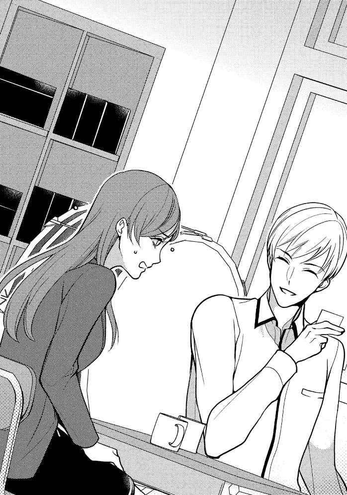

| 【幌井学司短編集1】ドS先生が甘く奏でる恋熱レッスン【イラスト入り】 (無敵恋愛S*girl) | |
| 幌井学司 | |
| 株式会社 ぶんか社 (2018) | |
株式会社 ぶんか社
【幌井学司短編集①】
ドＳ先生が甘く奏でる恋熱レッスン
幌井学司・著
百山ネル・イラスト
ゆめきよ・イラスト
ひなた巴・イラスト
※本作品の内容はすべてフィクションです。
実在の人物・団体・事件などには一切関係ありません。
江 野 葉 子 は母校の受付でがっくりと肩を落としていた。
「中止、ですか......。でも当日になって」
「なにぶん急に決まったことで......大変申し訳ないです」
今日は、卒業生として母校で講演に近いものをする予定だった。
いわゆる〝社会で活躍している卒業生〟みたいなタイトルのもので、葉子自身も学生時代に誰かの話を聞かされた覚えはある。
何を話すかは自分なりにしっかり準備してきた。高校生相手だとはいえ、プレゼンだと思って。我が社の名前に恥じないよう、なんて考えて。
「中止にすることを決めたのはどなたですか？ 直 にお話ししたいのですが」
「ええっと、それは......、校長先生だろうと思います。でも──」
受付に座っている女性は明らかに戸惑っていた。この人に怒っても仕方がないなとは思う。
「それか、教務の先生と連絡がつけば」
戸惑いが明らかに感じられる手つきで受付の女性は受話器をとり、内線にかける仕草をした。
が、ちょうどそのとき──。
「ああ、あなたが江野さん。事情をお話しするよう、僕が仰せつかってますので」
まだ若い男性の声がして、受付の女性はほっとしたように彼を見た。
葉子も振り向く。男性教諭。少し年上くらいの。
「音楽の青 山 です」
「......音楽の先生？」
「そうです。とりあえずこちらへ」
案内される形になって、ついていかざるを得なくなる。
十年近く前はよく見知っていた廊下を二人、歩いていく。
「いやあ、今回は災難でしたね」
「はあ」
軽い調子で言われて葉子は神経を逆撫でされているように感じたが──。
「生徒達もびっくりしてるかもしれませんね。でも講演を聞くはずだった時間が自習になって、喜んでる子もいるかも」
「......そうですね」
そう続けられると冷静になってしまった。
自習時間。
一応は出る課題。
だけどメインは友達とのおしゃべりで、高校時代の楽しい思い出のひとつだった。
自習時間に何を話したかなんて何一つ覚えていないけれど、先生が「自習」と黒板に書くだけでわくわくした。
それも大切な青春の一ページ。
「江野さんのこと、僕が教えたことあったかな？ 何期生？」
「51 期生です」
「なるほど、じゃあ......、僕がこの学校に来た次の年に卒業か。一年は一緒に居たみたいだけど、三年生は受け持ってなかったね」
「そもそも選択は美術でした」
「おやまあ、それは失礼」
「いえ......えっと。すみません」
軽い調子の言葉にどこか面白くないものを感じて八つ当たりのような調子で言ってしまったなと、微妙な後悔が胸に上ってくる。
「その、私は......大変音痴なので」
「......ぷ、ははは。そんな風に言わなくても。美術の方が性に合ってただけでしょ？」
言われてみるとそれもそうだと思った。
「それか仲の良い友達が美術をとるから誘われたとか」
「あ──」
思い出す。確かそういうこともあった。誘われて、なんとなく。芸術の選択なんてそんなものだ。
「もうすぐ休み時間になるから少し急ごうか。生徒に見つかると厄介だ」
葉子は改めて彼の後ろ姿を見た。すらりとした体と、芸術に携わる人物独特のどこか浮き世離れした空気。
おまけに年齢も若い方だし──声も落ち着いた低音で聞きやすい。女子からの人気はそこそこあるのかもしれないと思ってから──記憶の端に引っかかる。
「......思い出しました」
「うん？ 何を？」
「青山先生のこと。覚えてます。三年の、最後の文化祭で──」
「ああ──。そういえば軽音部に引っ張りだされてね。あとで教頭先生に怒られたから、舞台に立ったのはあれっきりだよ」
「............」
思い出したのはそれじゃない。
けれどそのセリフで、軽音部の体育館ライブを見に行った同級生が騒いでいたことも思い出した。
色々なことを忘れてしまったんだなと思いながら──音楽準備室の椅子に葉子は腰掛けていた。
「コーヒーでいいかな？」
「あ、はい。何でも......お構いなく」
「砂糖とミルクは？」
「両方、いただきます」
この小さな部屋には馴染みがなかった。同じ構造の部屋である、物理準備室に出入りした覚えはあるけれど。
面談をするような形で、狭いスペースに向き合って椅子が並べられている。その片方に葉子は腰掛けていて、もう片方に──コーヒーを淹れ終わった青山がいま座った。
「お待たせ」
「いえ......」
「少しは落ち着いた？」
「何がですか？」
「気分。さっき受付で見たときは校長に直談判も辞さないような顔してたからね」
「......そうですね」
そこまで話したところでチャイムが鳴った。三時限目終了の合図。
四時限目に葉子が講演をすることになっていた。
「実際、酷い話だと思うよ。当日になって、なんてねえ。今朝の職員会議から他の先生方もずっとバタバタしてたし」
慰めるように言われ、今度は怒りのかわりにやるせなさが湧いてくる。
「中止の原因は......本当はわかってるんです」
「そう？」
ちょうど今週に入ってから、葉子が勤める会社の不祥事が大々的に報道されていた。人の命に直接関わるようなことではなかったが、会社がある案件での対応を誤ったせいで〝炎上〟のような状態になってしまって──体制が疑問視され、社長が近々謝罪会見を開くとも噂されている。
「でも、酷い話なのは間違いない」
「そうでしょうか」
「君にとってはね」
「............」
そう言われた瞬間、ふっと体から栓が抜けて詰まっていた空気の圧が下がるような感覚があった。
「学校もね。卒業生の肩を持ってやればいいのに」
「タイミングが悪かったんです」
「できた答えだね」
少し皮肉げに言われても今はもう気にならなかった。
「ま、そんな風に答えてもらえれば僕の方は助かるよ。他の先生は授業で忙しいから、なんて言って憎まれ役を押し付けられたわけだから」
「そうなんですか」
──憎まれ役。
その通りだ。急に中止になったと聞いたとき、葉子は確かに怒っていた。理不尽なものを感じていた。
今も......まだ感じている。学校以外の場所でも。
会社の不祥事の種火がくすぶり始めたのは先月のことだった。そこからＳＮＳで徐々に火がつき、煙が上がり、炎上が始まるさまをなんとなくではあるがずっと見てきた。
「あ──悪かったかな。憎まれ役だなんて言葉を使って」
「いえ、別に」
単に他のことを考えて沈んでいただけなので葉子は慌てて否定した。
「だからまあ......憎んでくれていいわけだけど」
「先生に怒ったって仕方ないです」

「そうかい？」
困ったように青山は頭をかいた。コーヒーの香りが揺らぐ。青山が手にしているカップの中の液体はブラックだった。
誰かのことを〝先生〟と呼んだのは久しぶりで、その響きをどこか心地良く思う。
「事情を説明して差し上げろと教務の先生には言われてるんだけど......どうしようか」
「大丈夫です。だいたい事情はわかっているつもりです」
タイミングが悪かった、というさっきの言葉で、葉子が事情を飲み込めていることは青山にも理解できているはずだった。
「......よくできた生徒だったんだろうね」
「そんなことはないです」
「いや、勤めてる会社だって立派だよ。上場企業でしょう。あ、そうだ、名刺でももらえる？」
「はあ」
言われてバッグから名刺を取り出す。
それをうやうやしく受け取って、青山は言った。
「肩書も立派だね。同期じゃ出世頭でしょう」
「............」
あからさまに褒められて居心地が悪い。中止になった罪滅ぼしのつもりなのだろうか、でもそんなことを今更言われてもと思っていると──。
「でも、こんなによくデキて立派だとお嫁にいけないでしょう」
「は──」
いきなり目の覚めるようなパンチをもらってしまった。
「プライベートなことは、今は──」
「図星かな？」
「そ、そういう先生だって」
つられて言ってしまってから後悔する。葉子の視線の先には青山の薬指があった。ピアノでも弾くのかもしれない長い指を見るともなしに見るうちに、無意識に確認してしまっていたらしい。
視線の先──素のままの薬指を青山も確認し、それから笑いながら言った。
「うん。居ないね。独身だ。結婚してない」
「しないのと出来ないのは違うんですよ」
「それはお互い様じゃないか」
なぜか憎まれ口を叩き合うような展開になってしまって、理性では狼 狽 している。こんなこと言うつもりじゃなかったと考えている。
だけど感情の方は、こんな風に言いたいことを言ってしまうなんて久しぶりだなとはかない喜びにわいていた。
「出来ないんじゃないですよ。私には......仕事がありますから」
「僕だって。何せ聖職を預かってますからね」
お互いに澄まして言ってから──。
「ぷ......ふふ、あははは」
「はははは......、強がりだな、江野さんは」
破顔して笑いあった。
カップの中のコーヒーの水面が揺れている。
「ああ、おかわりいるかな？」
「あ、いえ......」
「紅茶も緑茶もあるよ。そっちの方が良ければ──」
「いいえ、そうじゃなくて。もう時間が──」
いつの間にか四時限目開始のチャイムが鳴っている。あまり長居しては悪いという気持ちはあった。
「時間？ 本当は四時限目全部使って講演の予定だったんでしょ？」
「はい。私の時間じゃなくて......先生の時間が」
「それなら構わないよ。どうせこの時間は授業はないし──江野さんと喋ってる方が楽しい」
ストレートに言われて少し驚く。
喋ってて楽しい、なんてあまり言われたことがない。特に異性からは。
青山は立ち上がってから言った。
「──付き合ってくれるかな」
「え──。え!? 」
またいきなり何を言い出すんだろうと思う。が──。
「もう一杯。コーヒーでいい？」
「う......あ、は、はい......」
勘違いで顔から火が出そうになった。
程なくして二杯目のコーヒーを淹れ終わって、座り直した青山が口を開く。
「江野さんは真面目だね」
「......。先生は不真面目ですか？」
「音楽の教師があまり真面目にしてても仕方ないでしょ」
なるほどそうですね、と答えていいものかどうか迷ってしまうあたり、自分は真面目なのだろうかと考えてしまう。
そう考えていることそのものが、真面目だと人から言われることの証拠のような気もする。
「江野さんに先生って言われるのは良いなぁ、と思うくらいに不真面目でもあるね」
「......？」
「いや、十代の小娘に先生先生って言われてもね、何とも思わないよ。でも江野さんみたいなスーツの女性に先生と呼ばれるとぐっとくる」
「急に何言ってるんですか？」
「本音だよ」
葉子が半ば呆れていると青山はぽんと手を打った。
「そうだ。まだ時間はあるし、進路の相談でもしようか、江野さん」
「進路？」
「来 し方行く末をね。仕事は楽しい？」
「............」
学校は楽しい？ と聞いてくるのと同じような口調だった。
「音楽の先生って、進路の相談するんですか？」
「一応するよ。三年の担任を持ったことはないけどね」
この高校は進学校の部類に入る。だから体育や音楽の教師が三年生の担任を持つことはなかった。
「仕事は......楽しいですよ。やりがいはあります」
「そう。それは良かった。けれど......江野には、仕事以外の楽しみはある？」
「仕事以外......ですか」
さん付けから呼び捨てになったことにそれほど違和感は無かった。先生との面談だという雰囲気になり始めている。
「例えば趣味とかね」
考えてみる。
しかし何も浮かんでこない。ずっと無趣味な生活を送ってきたと思う。
「恋愛でもいい。仕事以外の楽しみがないと、ね」
「......わかったようなことを言いますね」
「教師だからなあ。せめてわかってるフリはしておかないと」
冗談めかして言う青山を見ているうちに、葉子の中で彼を見たときに最初に思い出した記憶が頭をもたげてきた。
「先生は、お仕事楽しいですか？」
「まあまあ楽しいよ。でも熱血教師っていうガラでもないし、江野に比べれば仕事に対してはずっと不真面目だよ。手を抜きながらやってると思うし──」
気の抜けた笑みを見せながら言う青山を見ているうちに、その最初の記憶の印象はますます強まってくる。
芸術科目の教師らしく、いい加減で適当で適度で、リラックスした雰囲気を醸し出しているけれど──。
「先生も真面目ですよ」
「ん？ そんなことはないよ」
「だって......音楽の先生らしくしようとしてる」
「......そうかな」
失礼なことを言おうとしているかもしれないと思う。
だけど──どうせだから言ってしまう。
「私、覚えてます」
「何を」
「文化祭のこと」
「ああ、あんな、軽音部に付き合ってギターをやらされたことは──」
「それじゃなくて。私はそっちは見てませんから」
「そっち......？」
まだきょとんとしている青山を見ていると、年上の相手なのに年下のようにも見えてくる。
実際、あのときの青山は今の葉子よりも年下だったのだ。
「私が三年生のときの文化祭の、合唱コンクール。先生が担任の、一年Ｃ組が......確か準優勝でしたよね」
「あ──ああ」
「今はどうか知らないですけど、うちの学校の文化祭って一年生が賞とることってまずないじゃないですか」
「そうだね」
文化祭ではクラス対抗の合唱コンクールも伝統的に行われている。優勝や準優勝を飾るのはほぼ三年生のクラスだ。
卒業を前にしたクラスの結束もあれば、生徒一人ひとりの経験値も違う。上位は三年生のクラスで決まりだ。一年生のクラスが入賞することはまずありえない。
けれど──あの年。
青山が担任だった一年Ｃ組は見事入賞を果たした。生徒も教師陣も誰もが驚いていたけれど、納得もしていた。
それだけのものを聞かせてくれたと評価していたのだ。
「準優勝をとったあと......。先生が泣いてるところ、見ました。覚えてます」
「............」
「あれは、悔し涙でしょ？ 当時私も、一年Ｃ組が優勝するかもしれないって思いましたから」
「あれはあれで良かったんだよ」
対面した椅子に座って、ずっと葉子のことを見下ろしていた青山だったが、今はじめて視線を逸らした。
「三年を差し置いて優勝するのもどうかと思うしね」
「練習、たくさんしたんですか？」
「そりゃあね。もう随分前のことで覚えていないけど......。何せ新任教師で、いきなり担任まで任されてたからな」
「先生は本当は熱血教師なのかも」
葉子が続けると青山はふと笑い──気を取り直したように再び葉子を見た。
葉子はその視線にたじろぐことなくもう一言付け加える。
「でも、進学校だし。音楽の先生に真面目さなんて求められてないから......」
「わかったようなことを言うね」
「優秀な生徒でしたから」
「優秀で、そんな風に気が回ると......苦労するばっかりだろ」
葉子はやっと口をつぐんで、手に持ったカップを見た。
二杯目にも砂糖とミルクはしっかり入っていた。
「先生は、ご趣味はありますか？」
「......ないよ」
「仕事以外の楽しみは？」
「困ったねえ」
さっきした会話を立場を変えて再生している。だが、うまくやり込めたというような気持ちではなかった。
何だか仲間を見つけられたような、似た者同士であることがわかったような──不可思議で切ない感覚があった。
「実際のところ、真面目かどうか、熱血かどうかなんて知らないよ。自分でもわからない」
「はい」
「ただ......気持ちを持て余すことはある。それは江野も同じかな」
「そう、ですね......。そうかも......」
青山は一度咳払いをして、手に持っていたカップを机の上に置いた。
そして──まっすぐに葉子を見つめて言う。
「この持て余してる感じを解決する方法はわかってるんだよ」
「......？」
「恋愛をする」
青山の手が伸びる。葉子が両手で持っていたカップをとりあげて、それも机の上に置いた。
それから──青山は葉子の手をとった。慎重に。ゆっくり時間をかけて手で手を包む。
「もし良かったら」
その手の慎重で真摯な動きが、彼本来の性格を表しているように思えた。
「僕と付き合ってみませんか」
「え、と......」
「返事は今じゃなくてもいいです。ただ......かつてそんな風に僕を見ていた生徒と会えたことは、何かの縁だと思う」
葉子が戸惑うそぶりを見せるや否や、返事の先延ばしを提案し、おまけに理由までつけてくれる。
「先生はやっぱり情熱的で、真面目ですね」
「な──どうして」
「いえ、こっちの話です」
「......まったく」
先生だって気が回る人だと葉子は思う。しかしそれをどう言葉にしていいのかはわからなかった。
しばらくそのままで居てから、青山はゆっくりと手を離した。
それからさっき渡した名刺を見る。
「職場の今の様子はどんな感じ？」
「忙しいですね。今日中止になった原因の案件のせいもあって......。見直しもしなきゃいけなくて」
「そうだろうね」
うなづいてから青山は立ち上がる。
そして葉子の目を見つめながら少しだけかがんだ。
「あ......」
「これで慰めになるのかわからないけど──」
青山は半分独り言のようにつぶやきながら、でも葉子の目から視線を外さないまま──ゆるく腕で頭を抱いた。
「先生」
胸に抱きしめられる形。
緊張の数瞬が過ぎて、葉子に拒否の気配がないことを察した青山が徐々に腕に力を込めていく。
「先生......」

ほとんど今日会ったばかりと言うこともできるのに、葉子にとってはそう呼ぶのが自然に思えた。
「あのお堅い教務や校長が、一度は今日の講演者に選んだわけだし。江野はすごいと思うよ」
「............」
「頑張ってる。自信もって」
広い胸にゆるく抱かれるうちに、どこか安穏とするような泣きたくなるような感覚が全身に広がっていく。
痺 れにも似た心地良さの中で、葉子は青山の胸に頭を預けた。
感じるのはコーヒーの香り。
それに加えてどこか埃 っぽく鼻孔をくすぐるのは、思春期の時代の音楽室の匂いだった。
「先生」
「うん？」
「音痴って、直せますか？」
「はは......、ある程度はね。レッスンすれば。僕は声楽は専門ではないけど」
「先生の声は好きです」
「声は、か」
「音感もないんです。リズム感も」
「教えがいがある生徒だ」
頭を胸に預けながら密やかな会話を交わす。
こうしていることを嬉しいと感じていると、葉子は気付いていた。
広い胸に優しく抱かれたときの甘やかな高揚は、数日間は残っていた。
一方でそれっきりでなかったことになるのかなという予想もしていた。所詮別の世界に住まう人。葉子には仕事がある。日々は忙しく過ぎていく。返事はいつでもいい、なんて言われたまま一時の思い出にする程度がお互いにとってベターなんじゃないか、と納得しかけた頃──。
会社の葉子のデスク宛てに一通の封筒が届いた。
訝 しみながら封を開いて見ると──。
『あおやまピアノ教室』
中に入っていたのはやや年季を感じさせる一枚のチラシだった。可愛らしいフォントに音符と簡単なイラストが添えられた、手作り感あふれる紙面。小学生とその親向けに作られたものだろう。
誰が送ってきたのかは明らかだ。名刺を見て送ってきたのだと思う。そして封筒の中にはそのチラシ以外のものは入っていなかった。
「毎週日曜、午後三時から四時半まで......おやつ休憩あり」
来てしまった、と思いながらチラシの紙面を読み上げる。
わざわざこんなチラシをでっちあげるとは思えないから、『あおやまピアノ教室』が存在するのは確かなんだろう。
（教室の手伝いをするとか、子供の相手をするとか......。気晴らしになるかな）
そんな風に自分に言い聞かせながら葉子は改めてチラシの住所とスマホが示す現在地を照らし合わせる。
「......すごい。旧家......？」
駅から十分ほど歩いた場所にある坂道の途中。
郊外でたまに目にする、立派な生け垣とうっそうとした植樹に囲まれたお屋敷の門の前。
いったいこの敷地は何坪あるのだろうと考えてしまう。それなりに手入れされたお庭も門から垣間見えて──。
呼び鈴らしきものを押そうかどうか迷っているところで門が開き、青山が姿を見せた。
板敷きの縁側を歩く。
まあ入ってよ、という青山の言葉に促されて葉子は後をついて歩いていた。まるで母校で会ったあの日みたいで──どうも自分は押しに弱くていけないなと思う。
「来てくれて嬉しいよ」
「こんなお屋敷だなんて」
「どうにも広いばっかりでね。今は一人で住んでるし、最低限しか掃除してないんだよ。植木屋さんには来てもらってるけど、雑草くらいは自分で抜かないとねえ」
「良いお庭だと思います」
「お世辞は結構」
「そんなつもりじゃないですよ」
実のところ、少し憧れる気持ちはあった。こういう塀に囲まれた屋敷の住人はいったいどんな生活をしているのだろう、という好奇心とか──。
大きな庭。池がある。松の木もある。木の棚もあって、もしかしたらそこにはかつて盆栽や植木鉢が並んでいたのかもしれないと思う。それらを見ながら縁側を歩く。
すると普段自分がいるのとは違う日本に来たような気がする。テレビドラマ、あるいは時代劇で見る感じの古めかしい時間。
ビルもカードキーの改札も警備員もいない場所。
「ここがピアノの部屋」
「はあ......」
いくつかの部屋を縁側から見ながら通り過ぎた末に、グランドピアノが置いてある広い部屋まで案内された。
「ここで音楽教室もやってたんだよ。母親がね」
「やってた？」
そこまで話して、今は一人で住んでいるという先刻のセリフを思い出した。
「今はやってない。この間、整理してたら送ったものを見つけてさ。懐かしくなって......それから君のことを思い出した」
二十畳ほどの解放感のある板敷きの部屋。ピアノがあるだけでなく、棚やテーブルもあって雑多にトロフィーや雑貨が置かれている。
雑貨も家具もキッチュでどこか可愛らしいけれど、年季は感じる......そんな雰囲気だった。
日当たりはとてもいい。縁側から日差しがいっぱいに差し込んで、ピアノの間近までを明るく照らしている。
穏やかで優しげな空気が漂う。ただ、どこか濃密に塞いでいるような感覚もあった。
「まさか素直に来てくれるとは思わなかった」
「いえ。本当にピアノ教室があるなら、見学とか、お手伝いとか......。小さな子向けの教室に思えましたから」
「そうか、ありがとう」
軽く礼を言われてしまって葉子は頬が熱くなるのを感じた。
「えっと......でも、ピアノ教室は今はやってないんですよね」
「できれば再開したい」
「そうなんですか？ 生徒さんは──」
「志望者が一人いるだけだね」
「あら。その子は今日は来てるんでしょうか」
「来てるよ。可愛らしい子だよ」
「へぇ......女の子？」
「女の子......というかわざと言ってる？」
「はあ」
「生徒、というのは君のこと」
「え──。あ、そ......そうですか」
相当間の抜けたことを言ってしまったことに気付き、また頬が熱くなる。
（......可愛らしいって）
そんな何気ない一言も引っかかって、胸の内側がむず痒 かった。
「音楽のレッスン。本当に受けていく？ 初回は無料」
軽く笑みを浮かべながら青山は言って、ピアノのふちを指でそっと撫でる。
その仕草に秘密めいたものを感じて、葉子の気分は微妙に高揚して──また新しい好奇心を感じていた。
この人がピアノを弾く姿を見てみたいと思ってしまっていた。
「レッスンっていうと......。どんな内容ですか？」
「何でも。生徒の希望に応じて」
「じゃあ......会社の親睦会のカラオケ対策とか。いつも困ります。あんなのなくなればいいのに」
「ぷ......ふふ、ははははっ」
何気なく本音を言ってしまうと青山は破顔した。
「カラオケか。僕も嫌いだよ」
「そうなんですか？ 先生なら得意なものだとばかり」
「そうやって期待されるのがまた面倒でね」
「あー......されそう」
仕事と何の関係もない人と話すのは至極 久しぶりだと相づちを打ちながら気づく。
「あんなもの、宴会慣れしてる年上の先生方の方がよほど上手だよ。第一、僕は──」
「声楽は専門じゃない？」
「よく覚えててくれたね」
次第に口調が軽くなる。
ピアノにもたれかかる青山のすらりとした体をぼんやりと眺めてしまう。
葉子は音楽に興味を持ったことはほとんどなかった。ただ学生時代に皆が聞いているものを聞いていただけだ。社会人になってからは意識して聞いたことはない。
そのことについて、なぜか青山に失礼だと感じてしまう。そして中高生だった時代にこんな先生に出会えていたら──あの準優勝した一年Ｃ組にもし自分がいられたら、音楽に対する見方も少しは変わっていたのかもしれないと思う。
「......せんせい」
「ん？ 何だい」
やはり葉子にとって彼はそう呼びたくなる存在だった。
視線が交差する。
「いえ、何でも......」
数秒後になんとなく目を逸らした葉子に青山は微笑んだ。
「趣味がね。大事だよ」
「はい。前も言ってましたね」
「あるいはユーモアがね。ユーモアの語源を知ってるかな。体液とか気質とか。人の体を流れるものだよ。とにかく、それがないとー人生に立ち向かっていけない」
「本当にそうでしょうか」
「鼻っ柱の強い生徒だなぁ。楽しみは必要だよ」
「......楽しみなんて」
「楽しみなんて、ね。そう思う気持ちはわかる。人を楽しませるとき、楽しませる方が楽しんでちゃいけない。天才なら自分も楽しんでうまくいくだろけど、普通はそうじゃない」
葉子は部屋の隅に設 えてある棚を見た。そこには数々のトロフィーが並べられている。
何々の、どこそこのコンクール。
「だから仕事以外の楽しみを持ちましょうということだよ」
言いながら青山はピアノのカバーを除けて蓋を開けた。
「そこに座って」
「......はい」
ピアノの前には二つの丸椅子がある。いい加減腰を落ち着かせる場所も欲しかったので葉子は座った。青山も隣の丸椅子に気軽に腰掛けてピアノに指を添える。
「弾いてみて。自由に」
「......いきなり言われても......」
「曲を弾けと言ってるんじゃないよ。好きなように。触れるだけでいい」
「わかりました」
音楽は苦手だ。
その意識ばかりが先に立つ。
どこか苦いような気持ちで鍵盤に触れて──押し込んだ。
ぽん、と穏やかな音が鳴る。
「いいね。上手だ」
「か、からかわないでください。押しただけです」
多分きちんと調律されているのだろう。
まったく素人 の葉子が押し込んだだけなのに、穏やかな音の響きが心地良く儚げに感じられた。
「もったいないです......。私には、こんな。どの指でどの鍵盤を押せばいいのかも知りませんし......」
「うまくやろうとしなくていいんだよ。好きに鳴らしてみればいい」
「そんなこと言われても」
葉子がいくら戸惑ってみせても、青山は目線で促してくるばかりだ。
仕方なくまた鍵盤に指で触れて押す。音が鳴る。
いい加減な知識を手繰り寄せて、ドミソを同時に押してみる。
「上手だ。だけどそれが邪魔をする」
「邪魔......？」
「かくあらねばならない、という知識がね。和音なんて気にしなくていいのに」
「でも......何を弾いたらいいのか、さっぱり」
「そんなの僕にだってわからない。いつもわからなかったよ」
言いながら青山は鍵盤にいくつかの指をつけた。
ゆっくり時間をかけて連なった音が鳴る。
「弾いてみて。それに合わせてついていくから」
「え......でも。本当にわからないんです。だから──」
「何でもいいよ。気にしないで」
強く推されて仕方なくもう一度鍵盤に触れた。
ぽん、と情けなく音が鳴った直後に、青山の指が動いて連なる音を奏でた。
戸惑いながらもう一度適当な場所を押す。今度は黒い鍵盤。青山は少し笑ってそれに連なる音を奏でる。
正直に言って心地良かった。
つたない単なる音に、いくつかの音が連なってちゃんとした音楽のように聞こえる。
「先生、すごい──」
「そんなことは知ってる。さあ、好きなように」
さすが先生、ときどき偉そうだと思う。
ただ葉子の方も音に当てられて気分が高揚していた。わけのわからないことをやらされているという気持ちから、自然と好奇心がわいてくる。
次はこの音、次はここ、どんな風についてきてくれるのだろうと......。
──日差しの差し込む部屋。だけど二人が座っている場所までは届かない。日なたのあかりを脇に見ながら思うままに指を運ぶ。
音楽室特有の埃っぽさ、きらきらと舞う空気を思い出す。
中高生の頃は手近にあったのに、今となってはかけがえのない郷愁。
楽しかった時間。そう、ユーモアがあって、血が通っていて──将来への不安はあったけれど、柔らかな夢を見ていられた時代。友情は永遠だと思っていたあの頃。
もう手は届かない。
青春は過ぎ去った、と思う。
老成してるねと笑う友達もいる。まだまだ青春真っ盛りだから、と言って年上の人が張り切っているのも見る。
そういう人たちの空気にあてられたとき、自分もと微妙に焦る気持ちもあるけれど──疲れてしまう方が大きかった。自分には似合わないと遠慮して。
だけど今はごく自然に。つたない指の動きに反応する、細くて骨ばった指に葉子は目を奪われていた。
「......すごいですね。私はほんとに何も知らないのに......こんな」
「楽しいだろう？」
微妙な押し付けがましさも今では好ましいと感じて葉子は笑った。
「少し。楽しいです」
「少しか。まあ良い。とにかく、僕は──この楽しさをこれから先、君にだけ提供できればいいなと思ってる」
「......？」
「もちろん仕事はするよ。でもそれは楽しみにはしない。今まで自分が培ってきた技術、これから培っていく技術。音楽の先生、なんてものをやる上では必要のない、趣味の延長」
「趣味......」
「それを君のために思い切り......湯水のように使ってしまう。そういう贅沢をしたい」
「言ってる意味が、よく......」
「先生、と君に言われると良い気分だよ。だから君だけを相手に弾きたい」
二度目の告白を受けているのだということは葉子にも理解できていた。
だけどどう答えていいのかわからない。
本当に。
惑う葉子の手の上に青山の手が重ねられた。ゆっくりと。鍵盤がごくゆっくりと押されて、かすかな音が鳴る。
「初めて話したとき、怒ってたでしょう。理不尽な成り行きに」
「......はい」
「怒ってる顔が綺麗だと思った。それに怒るということは、プライドをもって仕事に向かってる証拠だよね。最初、少しだけ僕にその怒りの矛先が向かっていて──結構、なんというかな。久しぶりに心がわきたつのを感じた。......元気になった」
「元気になったんですか？」
「こんなに必死に口説くくらいに。あるいは、新任のときのことを思い出すくらいに......」
重ねられた手から熱を感じた。体温以上の体温と湿気が伝わってくる。だから葉子には青山が本音を言おうとしているのがわかった。
「精一杯、一生懸命やってる人のことは裏切れないよ。なんとか楽しみを持ってほしくて──だってそれが芸術に関わるものの使命でしょう」
「それが先生のユーモアですか？」
体を流れるもの。体液とか気質とか。
「君の方がユーモラスだな。出来の良い生徒だよ」
青山はふと笑って、重ねていない方の手でジングルのような軽い調子の音を短く弾いた。
「下の名前で......、葉子。そう呼んでいいかな」
「──はい」
「君は出来のいい生徒だからね。僕が何か言うと、なんでもハイハイと答えてくれそう」
「そんなことは」
「いいえ、って言いにくかったら──かわりにその鍵盤を強く押して、音を鳴らしてくれればいい」
言って、青山はやっと重ねていた手を離した。鍵盤の上には葉子の右手だけが残る。
「葉子。そう呼ぶよ」
手に力を込める気にはなれなかった。無音のまま幾ばくかの時間が過ぎる。
「あの......先生の下の名前は？」
「ソウタ。漢字はね──」
青山が説明する。奏でるに太いと書いて奏 太 。その名付けとこの部屋の雰囲気は奇妙に一致していて、棚に飾られているトロフィーの類をまたぼんやりと眺めてしまう。
「葉子」
名前を呼ばれ、ゆっくりと肩に手が回される。優しく。時間をかけて。
だから葉子は鍵盤の上に指を置いたまま動かせない。
たゆたうような時間が流れ、肩を抱き寄せられていく。
静かな動作の中にぞくりとするような情熱を感じた。
優しく、あくまで優しくしながら──逃げられないように絡めとられていく。
まるで蜘蛛の古巣だ。
懐かしい郷愁を感じる空気。
それはイコール退廃的な空気でもあって、段々と葉子に世俗を忘れさせていく。
「葉子」
もう一度名前を呼ばれてドキリとする。初めて会ったときの軽妙な、からかうような空気。
それが擬態であることは葉子には本能的にわかっていたはずだった。十年近く前に、〝青山先生〟が情熱で涙を流し、また彼の情熱に当てられた生徒たちが厚い壁を破って準優勝を手にするところまでしっかり見てきた。
だから、もしかしたら葉子は自ら望んで絡めとられに来たのかもしれないと考えてしまう。
拒否の言葉のかわりになるはずの音を鳴らすことはできず、いつの間にか胸にしっかり抱き寄せられている。
真面目な、至極真面目な欲望と欲求を向けられているのを葉子は感じた。
「先生は」
「......うん？」
「私の楽しみがどういうものだと考えてるんですか？」
「いい質問だ」
抱き寄せられ、体重が移動していく。彼の方へと。
「きっと僕のと似てる」
「先生のと......？」
「もう誰にも見せないようなものを、湯水のように使ってしまうこと。使い果たすこと」
「............」
「二人だけの内緒で。普段は握っている手綱を、ほら......離してしまう」
ぐっと強く抱き寄せられる。体重を完全に預けた形になる。だけど手だけはまだ鍵盤の上に残っていて、音を出そうと思えば出せる状態だった。
数瞬。
迷う。
「先生、私、やっぱり──」
指に力を込めようとした瞬間に、残った手を取り上げられた。
「え──」
「もう遅いよ」
葉子は後ろから抱きしめられていた。奏太の膝の間に体を収めてしまって、立ち上がることも容易にできない。
ただ鍵盤の上に伸ばしてあった手だけが命綱だったのに、それはもう離されてしまった。
抱きしめられ、ぐつぐつと滾 る情熱を感じた。行き場を失った想いがにじみ出て徐々に葉子の全身を浸していく。
「思い切り楽しませてあげたい」
「待って、せんせい──」
「そんな声で拒否してるつもりなのかな」
ごく静かに言って、奏太は立ち上がる。そして今度は正面から、座ったままでいる葉子の頭を抱いた。
「......っ」
その仕草と包まれる感覚に、いけないと思いつつ無条件で安心してしまう。
胸にすがりつくことへの郷愁と繋がった退廃に脳裏が甘く痺れる。
十数秒経つ。
結局拒否らしい拒否の仕草をすることができないままでいた葉子の下顎 を奏太が優しく持ち上げた。
目が合う。
「好きだよ」
「わ、私は......」
「まだ決められないんだ。だったら今度は十秒待とう。その間に決めて」
間近からじっと瞳を見つめられる。奏太の瞳は濡れている。下顎を軽く持ち上げた手の熱も感じた。
「私も......」
「......うん？」
「先生のこと、嫌いじゃないです......」
「それは良かった」
奏太は苦笑して、葉子の顎を撫でてから──顔を近づけた。
自然と受け容れる姿勢になっていることを恥ずかしく思いながらキスを交わす。
最初は軽く。
徐々に情熱的に、深く。
悩ましい息が漏れる。
口付けをしたまま再び肩を抱き寄せられ、絡めとられるように正面にある体に体重を預けてしまう。
「ん......、いけないです、先生。こんなこと......」
「どうして？ 僕は君のことが好きだよ」
「......っ」
率直に何度も言われるうちに何かが崩れていくのを感じた。けれどまだ理性は居残っている。この関係にはまり込むことが怖いと訴えてくる。
「こういうことを、楽しむだなんて......」
「好きになった相手のことは欲しくなるし、好きになった相手には楽しんでほしい。楽しみを知らないなら──教えたくもなる」
言って、彼は葉子の前に跪 いた。
それから無言になって、けれど葉子の目はしっかりと見据えながら──その脚を持ち上げた。
「な、何を──」
「綺麗な脚だ。素足が見たいから──脱がすよ」
「......っ」
丸椅子に座ったままの葉子の腰に彼は手をかけた。
そのままお互い見つめ合う。
この姿勢だと、お互いに協力しないとうまく脱ぐことはできない。
「いい？」
「......っ、はい......」
熱のこもった瞳の色にあてられて、葉子は頷いてしまう。
「良い子だね」
だが頷いた瞬間、蕩 けるような心地良さを感じたのも事実だった。
段々気づいていく。最初から、自分から求めていたとは思えないにしろ、心底から嫌だと思っているわけではないことに。
下半身は下着一枚の姿になり、素足をさらけ出す。
そのふくらはぎに彼の手が触れ、ゆっくりと膝裏までなぞり上げていった。
「あ......」
思わず漏れた吐息を聞き逃すはずはない、けれどそれについては何も言わず、膝裏に入れた手で脚全体を持ち上げて──。
「......！」
あろうことか、彼は葉子の足指に舌をつけた。
「せ、先生！ そんなところ......っ」
葉子にとっては全く予想外の衝撃的な行為だった。
はっきり言って変態的な行為だと思う。いきなりそんなことをされるなんて本当に考えていなかったし、された経験もない。
だが彼は愛おしそうにそこに舌を這 わせ、葉子に抵抗の隙を与えない。
「あ、ぅ......」
くすぐったさと激しい羞恥心が綯 い交ぜになって葉子の胸を強く打つ。呼吸がどんどん浅くなって喉が干上がる。
「これくらいしないと、葉子は楽しんでくれないんじゃないかと思ってね」
「こんなの、楽しみじゃな......ぁ、うう......」
言葉の途中でまたぞろりと足を舐め上げられて背筋が粟立つ。
「どうしたいか、どうされたいかより......どうされるべきか、なんてことを考えてたんじゃないかな」
「そ、そんなの......わかりませ......、う、ん......っ！」

「今は良い子であろうとしなくてもいいよ。かくあるべき、は楽しみの邪魔をするだけだ」
その一言にどこか本質を突かれたような気がして混乱する。ただのまやかしの言葉かもしれないのに囚われてしまう。
よく知りもしないのに和音の浅はかな知識だけを示してしまったことが葉子の心を縛る。
こんなことをされてどういう風に振る舞えばいいのかさっぱりわからない。
「あ......はぁ、うう......」
足指の股にまで舌先が入り込んできて情けない声をあげてしまう。
そして自然と声を出してしまっていた自分を意識する。我慢出来なくて、あるいはこうするべきだからしようと思う暇すらなくて、素の反応を引き出されてしまっている。
「綺麗な脚だ」
指は鍵盤を奏でるようにふくらはぎを撫で、ひざ裏をくすぐる。
年上の男性を跪かせ、舌を使わせ、手では丹念に愛撫されて──感覚がどんどん異常に研ぎ澄まされていく。
「次は反対」
持ち上げられていた脚が、左から右に変わった。
「ま、まだするの......？」
「敬語を使う余裕もない？ 良い傾向だね」
不意に笑ってから──また同じように足先に舌を這わせてくる。
「っ、う、あ......！」
羞恥心は高まり、神経が焼ききれてしまいそうだった。
「せんせい......！」
下の名前を教えてもらったばかりなのになぜかそれで呼ぶ気にはなれなかった。
かわりに先生と呼ぶことで胸のなかに甘く苦い何かが満たされていく。
青春の、十代の頃の想いが一周回って追いついてきてしまう。
「先生、ごめんなさい......」
「どうして謝るの」
「だって、こんなの......」
自分の十代に不満があったわけではない。だけどきっと、刺激的な恋はしてみかった。
目の前の今の光景と、過去が満たされる追体験を同時に味わって高ぶってしまっていることがひどい裏切りにも思える。
「......いいんだよ」
何かを悟ったような甘い囁きが聞こえる。同時にまた指の股まで舐め上げられて──。
「ん......！ はぁ、ああ......っ」
腰砕けになって丸椅子の上で自分の体を支えられず、鍵盤の方へともたれかかりそうになる。
「......っ」
それを必死で押し留めて姿勢を保っているところに手が差し伸べられ、抱き止められた。
「危ない」
「ごめんなさ、う、あ......」
だが抱き止められただけではなかった。
片腕では葉子の肩を支えながら、もう片方の手は首筋をなぞる。
ごくりと生唾を飲み込んでしまったのが聞こえたかもしれない、そんな恥ずかしさに浸る暇もなく手が胸へと下りてくる。
「......やわらかいね」
そんな当たり前の感慨を聞いてやっと心のどこかで安心する。しかしそれも束の間で、胸を一通り撫でた後、手はするすると下腹をなぞって股間にまで到達した。
「だめ......、っ、あ......っ」
「しっかり濡れてるね。汚さないように......」
皆まで言われなくても意図を理解してしまう。
腰の布地に彼の手がかかり、下着をするすると下げていく。
「だめです、本当に......」
中途半端に下がり、布地が太ももあたりで止まったところで、彼の指が直接スリットに触れた。
「ぁ、ん......！」
「やっぱり。すごく濡れてる」
「や......あ、言わないで......」
「足を舐められたの、そんなに良かった？」
「......っ」
改めて指摘されると頬が熱くなる。
葉子のこの反応は明らかにその異常な行為がもたらしたものだ。
「大丈夫。ここからはゆっくり......」
囁 く声と共に指が形をなぞる。
葉子は目を閉じながら、どうしてもあの細く長い指を強く意識してしまう。
指先が繊細に触れ、陰唇をなぞって少しずつ割り開いて──すぐにクリトリスの場所を探し当てた。
「あ、はぁ、あ......！」
「ここが好きなんだ」
「っ、う......、あああぁ......！」
指先の動きはどこまでも繊細だった。探し当てた芽を離さず、それでいて強く刺激することはなく、優しくなぞる。
小刻みな動きで下から上へと擦り上げて。リズムを刻むように──。
「ん......！ は、あ、はぁ、んぅ......っ」
「可愛い声。先生って言ってごらん」
「ぅ、あ、はぁ......、せんせい......っ」
促された通りに言ってしまった瞬間に背徳感が増してじわじわと胸を覆う。それが下半身から上ってくる疼きと混ざって恍惚へと変わる。
指の動きは激しくなることはない。ただ正確に、一定のペースで擦り上げる。
「はぁ、ん、あぁ......、せんせ、せんせい......、ん、ぅう......！」
「......このままイキたい？」
ぴくりと背筋が跳ねる。
もう絶頂が近いことを見抜かれていて、手のひらの上で踊らされている感覚。
「イキたかったら言って」
あと少し身を任せてしまえば気持ち良くなれる──そんな欲望もくすぶっている。
けれど今の葉子はそれ以上のものを求めていた。
「せんせいと......一緒に」
「へえ......。そんなこと言えるんだ」
一瞬叱られたのかもしれないと思う。
間近で見る彼の瞳の色に欲望と熱を感じて、間違った答えを言ってしまったわけではないと気付いて──胸の奥からふつふつと喜びに似たものがわいてくるのが不思議だった。
「一緒がいいです......」
「わかった。良い子だね」
葉子の見ている前で彼が半端にズボンを下ろす。露出した隆起を垣間見てどこか安心してしまう。
それから彼は葉子の体を抱え上げ、丸椅子と共に少しだけ移動した。
──日なたの方へ。
「え......こ、こんな、明るい──」
「葉子の体をよく見たいから」
陽光に照らされて陰影がくっきり浮いた丸椅子の上、まず彼が座ってから──葉子がその上に座らされる形になる。
「あ、や、ぁ......！」
「力、抜きなさい。大丈夫。痛くはないから」
やや高圧的な口調。
それとは対照的に、葉子の先生は彼女の体をゆっくりと下ろして──少しずつ挿入していく。
「ん、ぅ......！ せんせい......っ」
「そう呼ぶの、好きなんだろう」
「だって......」
「だって、か。聞き分けの悪い生徒の常套句だね。好きだよ」
「好きなんですか......？」
「普段は出来の良い生徒から聞くとたまらない」
「......っ、あ、ゆっくり......ん......！」
睦言の応酬をしながら徐々に徐々に隆起を埋め込まれる。
確かに形を感じる。
割り開かれ、ときに前後して──たっぷり時間をかけて完全に挿入し、葉子は彼の腰の上にまたがった。
「気持ちいいよ」
「ぁ......はぁ、ん......」
素直な言葉を聞いてまたひどく安心する。
「こんなに股を広げてるのに......締め付けて」
そこまで言ってほしいと思っていたわけではなく、今度は背筋が熱くなる。
そしてすぐに、こうなる直前にあった感覚を思い出した。
「......まだ締め付けるんだ？」
「だ、だって......」
考えてみれば、だって、なんて誰かに言うのもいつぶりだろうと思う。甘えてしまっている自分を意識して切なさが増す。
「このまま、力は入れなくていいよ。僕が──」
「......っ」
元より葉子には主導権はまったくなかった。
またがる体位になっているとはいえ、足が床についていない。
ただ下から突き上げられ、手で腰を揺らされていることしかできない。
「あ、はぁ、ああ......！」
初めは穏やかに。
だんだん速く。
下からの突き上げを意識しながら目を閉じるまぶたの裏が白くて──かえって日なたにいることを思い出してしまう。
葉子がまぶしげに目を開けると、彼と視線が絡む。
「よく見えるよ。綺麗だ」
「い、言わないで......見ないでください......」
「どうして。綺麗だって言ってるだろ？」
腰をつかんで前後に揺らしていた手が葉子の脇腹をなぞる。
そして控えめな乳房を持ち上げた。
「可愛い」
「ん......！」
持ち上げられた乳房の先端に唇が吸い付く。舌先で乳首を転がされ、軽く甘噛みまでされる。
「だめ、せんせい......っ」
「ここだけじゃないよ」
言って、今度は手が下腹へと下りていく。
「や......あ......」
手のひらがゆるく開き、親指が股間へと到達して──。
「ん......！」
「やっぱりここが好きなんだ」
クリトリスを上から軽く擦ってくる。
「だ、だめ......、せんせい、それ......！」
人差し指と中指でされていたときほど繊細な動きではない。
だが、挿入されて膣内を擦られる感覚と同期するとすぐに官能が高ぶる。
「すごい締め付け」
「あ......すご、ん、あ......！」
官能は急速に強くなっていく。
目の前にいる人を全身が受け容れて、一気に体温が上がったのがわかる。日なたにいるせいだけではなく、全身に汗をかいて──意識が白く明滅し始める。
「せんせい......すごい、ふぁ、はぁ、あ......っ」
「少し声が大きいかな」
「っ、うぅ......！」
揶 揄 するように言われて必死で口を抑え、背筋を丸める。
そのせいで、体内を貫く熱い杭がひとまわり大きくなったように感じてしまう。自分が締め付けすぎているせいだとわかっていても止められない。
「葉子」
「ぅ、く......は、はい......っ」
なんとか返事をしたところで抱き寄せられた。
「ん、んむ......っ！」
そして頭を軽く押さえられ、唇と唇が重なる。
声が出せなくなって快楽の栓が閉じる。
その上、もう片方の手の親指はクリトリス付近をずっと優しく撫で上げるように愛撫していて──。
「......っ、ぁ、は......ん、ぅく......！」
もう達してしまうまで時間の問題だった。
目を閉じて、キスとクリトリスと体の内側の感覚に集中していく。
決して激しくはない動き。とん、とん、と下腹の奥に男性の先端が達している。
その熱がひとまわり大きく膨らんだのを確かに感じたところで、耳元で囁かれた。
「好きだ」
「っ、はい......っ」
「好きなら、好きって言ってほしい」
「せんせ......、ううん、奏太さん......、好き......！」
心の赴くままを言葉にしてしまう。
すると今度は耳元で息を飲むような声が聞こえて──強く抱きしめられる。
「一緒に──」
「はい......、ん、あああああぁ......！」
ぐっと大きく押し広げられる感覚。
その数秒後に、じわりじわりと熱の塊が広がっていく。
苦しそうな声を聞きながら、葉子も奏太の背中を抱きしめる。
二人の体が本当に一つに合わさって、同時に数回大きく震えた。
あたたかく白く満たされる。痺れが全身に広がってから甘い余韻に変わっていった......。
もう陽は落ちようとしている。
西日に照らされる中、葉子は彼女の先生がピアノを弾く姿を眺めていた。
長く繊細な指が踊り、魔法のように音楽を紡いでいく。
彼は真剣そのものだった。
本当に──自分の培ってきた技術すべてがこの瞬間にあったとでも言うように、一片の隙もなく聴く者を楽しませようとしているのが伝わってくる。
一曲弾き終わったところで──葉子はぱちぱちと拍手した。
「......素敵です」
「ありがとう」
奏太は立ち上がって礼をする。
「さて......もう良い時間だね」
「はい、先生」
葉子は冗談めかして答える。
「次の教室も、日曜の午後三時からで、大丈夫ですか？」
「......もちろん」
「おやつ付きで」
「それも......もちろん。君と僕だけの教室だから。自由に、楽しくやりましょう」
ピアノの蓋を閉じて、二人で協力してカバーをかけた。
★おわり★
──今日は誰かに会う予感がしてたんだ。
つぐみがそう言うと、一 鷹 は苦笑した。
「相変わらずだな」
「何がよ」
「何でも自分の都合の良いように解釈し過ぎだろ。何だよ、誰かに会う予感って」
「もう......せっかく久々に会ったのに。そっちこそ相変わらず」
「何が」
「憎まれ口ばっかり。人がせっかく再会を機嫌よく喜んでやってるのにさー」
地元の映画館の劇場の中。まだ上映前。明かりは落ちきっておらず舞台や座席は濃いオレンジ色に染まっていて、静かに音楽が流れている。
ざっと確認したところ、他の客の影はなかった。
「だいぶさびれてるみたい」
「ここももう古いからな。作品にもよるけど。今日のはほんと、全然人気ないっぽいな」
「そんな人気ない映画に久しぶりに会った幼なじみを誘う？」
「別にいいだろ。観たくなったんだよ」
戸 川 つぐみと佐 藤 一鷹はいわゆる腐れ縁だった。少なくとも高校卒業までは。その後の進路は別々になってしまったとはいえ、幼稚園から十代の終わりまでずっと同じ学校に通っていた。
「............」
つぐみはなんとなく一鷹の横顔を盗み見る。高校生時代よりも骨ばって、もともと切れ長の目元が余計に険しくなったように感じた。苦労してるのかな、とか思う。それか単純に目が悪くなったとか。
二人とももう社会人になって数年。大人になって会社に勤めて社会に奉仕して酸いも甘いも経験して──というほどではないにしろ、もう子供ではないことは日々感じている。
そう、例えば、さっき一鷹が売店で買ったこのビールとか。
「ビール好きなの？」
「まあまあ。コーラよりは」
「苦くない？ 昔はコーヒーも苦いからって言って飲まなかったくせに」
「......よくそんなつまらないこと覚えてるな」
久しぶりの帰省。
つぐみが地元の繁華街を歩いていると、一鷹とばったり再会した。それが今から三十分ほど前の話だ。
立ち話も何だから、というような流れでどこかに入ろうということになって、それで──この昔なじみの映画館に二人で入った。
中学や高校の時に二人で遊ぶ──デートと言っていいかもしれない──の時にもよく利用していた場所。
一鷹はいったい何を考えてここに入ると決めたんだろうとつぐみは疑問に思った。
（......何も考えてないだけ？）
もう一度横顔を盗み見る。すると──。
「何？」
「何でも......」
今度は目が合ってしまった。
自然と頬が熱くなる。
つぐみは目をそらす。しかし今度は一鷹がじっとつぐみの顔を眺めてくる。見られるとこんな風にして視線を感じるんだ、とか思いながら平静を装っていると──。
「顔、整ってるよな」
「えっっ」
いきなり褒められてつぐみはつんのめりそうになった。
「な、何。久しぶりに会っていきなり何、それは。どうゆうこと」
「別に。素直な感想を言っただけで」
「素直って......。昔はそんなの言ったことなかったのに......」
「そうだっけ？ そうかも」
一鷹は一人納得してやっと視線を外してくれた。スクリーンのほうに向き直り、椅子に深く腰掛ける。
（はぁ......。もう、いきなり何なんだか......）
ただの久しぶりの再会のはずだ。
たまたまで偶然で。ばったり会ったときは嬉しくないこともなかったけれど、二人はもうとっくに〝終わった関係〟であるわけだし──。
関係、なんて言葉を使うのもどうかと思うような、十代の頃の拙 い恋愛の思い出だった。
「覚えてる？ 昔さ」
「う、うん？」
「手繋ぎながら映画観てたことあったよな」
「あっ......。あったね。そういうことも。まあ......。あ、あの頃は」
思い出が蘇る。
中学三年だったか。なんとなく付き合ってるようなそんな雰囲気になって、じゃあデートでも、みたいな話になって、それから──ここに映画を観に来たんだった。
「あれは、でも......繋ぎたいとかじゃなくて。ただ肘掛けの取り合いとかしてたら......じゃなかったっけ」
「よく覚えてるな」
一鷹は苦笑した。
二人とも幼い頃から知っている相手で、当時は特に遠慮なんてなかった。子供っぽい体面で、男女として意識するほうが逆に恥ずかしいような気がして変な意地を張ったり。
今は二人とも肘掛けには手を置いていない。二人の間に一つだけあるそれは、大人のマナーとしてなんとなく空白になっている。
「肘掛け、使えば。今のうちに」
「今のうちって？」
「来年にはこの映画館、なくなるんだってさ」
「えっ、そうなの？ えー、なくなっちゃうんだ......」
「まあこの客の入りだし。仕方ないでしょ」
「でもせっかく思い出とかあるのに、残念──」
言いかけたところで一鷹にまたじっと見られていることに気付いた。
「だから今のうちに。使いたいなら使えば」
「う、うん......」
恥ずかしいことを言いかけた気がするのをごまかすためもあって、つぐみは肘掛けに手を置いた。
一鷹との間にある左腕と、誰もいないほうの右腕と、両方の肘掛けを使って椅子に深く腰掛けてみる。
なんとなく落ち着いた気持ちになって、ほぅと一つ息を吐いてみると──。
「はは、変わんないよな......」
「何で笑ってるの？」
一鷹はまた苦笑していた。
「ちょっとだらしない姿勢するとことか。昔と一緒」
「......ほっといてよ。リラックスして観たいんだから」
「俺といて、リラックスできんの？」
「え──」
いきなり言われて数秒考えてしまう。
その間に唐突に劇場内のブザーが鳴って照明が落ちた。
深く腰掛けたもののなんとなくお尻が落ち着かないような気分になってくる。一鷹の言葉が頭の中をぐるぐる回る。
「リラックスは......できるよ。普通に」
「そうなんだ。俺は結構、緊張してるんだけど」
「どうして？ 全然そんな風に見えない──」
「会えて......テンション上がった」
「あ、上がってたの？ ほんと全然そんな風に見えない」
「ずっと好きだった子と再会して、慌てて誘ったらオーケーもらえて。昔みたいに並んで座って──」
じりじりと機械音がしてスクリーンの幕が開いていく。
「え、ちょ、ちょっと待って。あの。言ってることおかしい──」
「おかしいかな。──あ。つぐみって呼んでいい？」
「あ、はい。いいけど。名前くらい、お好きなように──」
「じゃあ、つぐみ」
「............」
深く腰掛けた姿勢のまま、なんとなく動けずにいる。自分でとったはずの姿勢なのに、なぜかまんまと罠にかかったような気がした。
「──ずっと好きだった」
「きゅ、急にそんなこと言われても」
「さっき、つぐみがここに思い出があるからなくなっちゃうのは残念だって言ってるのを聞いて、嬉しかったよ」
「............」
並んで座っている。お互いの脚を見てしまう。当たり前だけど膝の位置が違う。一鷹の仕事帰りのスーツのズボンは、制服のズボンの生地と少し似ている。骨ばった膝の感触を思い出す。
「もう一回、チャンスが欲しい」
何のチャンスか、それは聞き返さなくてもさすがにわかった。
「一人でたまにここに来て、思い出してた」
一鷹がゆっくり手を上げた。
肘掛けの上にまで持ち上げる。その手の下には十センチほどの空間と、つぐみの手がある。
「............」
確認するように目が問いかけてくる。つぐみは何も言えず、動くこともできなかった。
「あの頃は、手を繋ぐ理由が欲しくて。でも言い出せなかった。つぐみに触れたいと思ってたのに。情けない話だよな」
一鷹の手が徐々に下りてくる。
「......情けないのは今も一緒かも。これから映画が終わるまでの二時間だけでも......あの頃を思い出せれば嬉しいと思ってる」
つぐみの手の甲に、一鷹の手がそっと重ねられた。
手のひらの厚みと体温が伝わってくる。一鷹の手と指の形は昔から綺麗だった。すらりと長くて骨ばっていて、爪は丸くて小さめで上品で──そして今はスクリーンの光が青い血管を映し出している。
手だけが重ねられている。重みはほとんど感じなかった。ただ置くだけ、という風に。
「......暑くなったら離せよ」
冗談めかして言って、一鷹はスクリーンに視線を移した。
迷いながら、つぐみも同じようにする。何か言いたいと思ったけれど何も思い浮かばなかった。
手を重ねたまま映画を観る。
それは二人の中で、じゃれ合うためのある種の約束事だった。
最初は映画館で肘掛けをとりあっていた。仲の良い兄妹みたいに。
それから二人きりで映画を観ている時にもなんとなく手を重ねるようになって──。
確か高校一年の時。
「やっぱ恋愛映画がいいのかな？ 文化祭だし。みんなそういう気分になってるかも──」
「よく考えろって。そういう気分になってるやつが視聴覚室にわざわざ映画観に来るか？二人で模擬店まわったりして忙しいに決まってる。わざわざ上映会に来るやつとは相容れない」
「ふーん。そういうもんか」
「そういうもん。ここは絶対アクションとか、スカッとできて無意味なやつだ」
つぐみと一鷹が通っていた高校の文化祭では、視聴覚室を使って映画の上映会が催されていた。
平たく言ってしまえば単なる暇つぶしの催しだ。行くところもやることもない生徒のために視聴覚室が開放されている。寝るために来る場所とも言われている。
つぐみと一鷹はクラスは別だったけれど、上映委員として一緒に映画を選ぶ仕事が割り振られたのだった。
「でも一本くらいはロマンチック......ロマンス？ があってもいいんじゃない」
「んー......まあ一本くらいは」
ああでもない、こうでもないと言いながらあらすじと評判を見て上映候補を選んでいく。
そして一応は候補をちゃんと観て、演目に加えるかどうか決定し、最後に教師に報告する。そういう仕事だった。
視聴覚準備室で、大きめのテレビを使った二人だけの上映会が毎日の放課後、粛々と進んでいく。
手を重ねたのはそんな日々のなかの一コマだった。
「──あ、ごめ」
「ん？ うん」
視聴覚準備室の床は防音のためにタイルカーペットが敷き詰められている。机と椅子もあるけれど、ずっと同じ姿勢で映画を観ていたら体が痛くなってくるせいもあって、二人は床に座ったり椅子に座ったりと時々移動していた。
ちょうど二人が床に座っているときに何かの拍子で手が触れて、一鷹は一度手を引いた。
だが──。
「......？」
つぐみが特に気にせず床に座ったままの姿勢でいると、一鷹の手がもう一度触れた。
当たってるよ、というのもおかしい気がして黙っていると──より大胆に手が重ねられた。
「な、何？ どうしたの」
「いや......別に」
「そう？」
はぐらかされると更に突っ込む気にもならず、手を重ねたまま映画を観続けた。
その手の感触と意味合いは、肘掛けの取り合いとは少し違っている気がした。
だからつぐみは素直にその時の感想を言った。
「なんか、こうして手を繋いでると落ち着くかも」
「え──それ本気で言ってんの」
「ん？ 私ヘンなこと言った？」
「ヘンじゃない、ヘンじゃない。ただ、俺は──」
（......ただ、何だったっけ？）
高校生の一鷹がどう言ったかを思い出す前に、いま隣に座っている大人の一鷹がふと口を開く。
「......こうしてると落ち着く」
「あ。それ私のセリフ......」
「覚えてたのか」
「......思い出してた」
正直にそう答えてしまうと、一鷹は俺もと返してくる。
重ねた手。伝わる体温。あたたかい。
大人になったんだからこんな程度は何でもないはずなのに心臓が少しずつ高鳴ってくる。
「もっと色々思い出して欲しい」
「映画も......ちゃんと観ないと」
「何だっていいんだよ。観るものは何でも。つぐみと観られるならどんな映画だって楽しかった」
やっぱり胸が高鳴る。
触れている手のあたたかさからは妙な落ち着きを感じる反面、胸の奥ではだんだん苦しさを感じてしまう。締め付けられるような、痛痒 いような。
「......あの頃はガキだったよ、ほんと」
一鷹がスクリーンを眺めながら自嘲の笑みを見せた。
「つぐみのこと、傷つけたと思う」
「それは......。でも。仕方ないっていうか......。私も子供だったし」
「優しいよな。昔から......」
笑みから自嘲の色が消え、何かを思い出すようなものに変わる。
「つぐみのこと、また傷つけたいと思う」
「 っ」
っ」
「あ。悪い。言い方が悪かった。そうじゃなくて！ つまり......。またつまんないことでケンカしたりさ。いや、別にケンカはしなくていいんだけど。どうでもいいことで色々言い合って、それから──」
少し慌てて弁解するのが面白かった。
重ねた手も指がせわしなく動き、一鷹が動揺していることが伝わってくる。
「そういう何気ない一言に本音が出ちゃったりするんだよ」
「......ごめん。いや......あの時もあの時も、もしかしたら傷つけてたのかもなって思って、たまに後悔とかして、思い出して。風呂で頭洗ってる時とか。ひとりでベッドで寝転がってる時とか。ぼーっと本読んでる時とか。急に思い出して、あー、失敗した、多分傷つけてたよなって、色々考えて悶 々 としてるうちに」
「ぷ......ふふ、あははは。一鷹でもそういうことあるんだ？」
「......あるよ。そりゃある。俺を何だと思ってるんだ」
「昔からけっこー偉そうだったよね。何でも断言するし。マイペースだし......」
「お恥ずかしい限りで」
短く言って、一鷹は自分の手で口元を塞いだ。
変わらない癖の一つだ。
本気でそういう仕草をしてるのを見たのは、あの時──。
文化祭の当日。
選びに選んだ上映プログラムだが、生徒たちにも好評──というわけではなかった。みんな視聴覚室には寝に来るだけだからだ。
視聴覚準備室では一鷹とつぐみが交代で上映機器を操作していた。
「あ、おかえり」
「ただいま。模擬店でかき氷買ってきた」
「私のぶんも？」
「券余ってたから。どっちがいい？」
「じゃ、メロン味」
カーテンが閉め切られ、薄暗い視聴覚準備室。モニターには上映途中の映画が映し出されている。よく耳を澄ますと映画の音声だけでなく、模擬店でにぎわう中庭の活気も聞こえてくる。
「んー......っ！」
「キーンてしてんの？ バカだな」
「くぅ......、うるさい！ はぁ、冷たかった......」
喉が乾いていたのもあってかき氷を勢い良く食べ過ぎた。
「ゆっくり食べろよ」
「ゆっくり食べてたら溶けちゃうでしょ」
半分憎まれ口のつもりで言い返すと、一鷹は一理あるという風に珍しく納得した。
「これ終わって、次のディスクにしたらもう最後かな」
「うん。お仕事お疲れさまでした」
高校生活初めての文化祭も終わって後片付けだけが残されていると思うと残念で寂しい気がした。
「何か......何もなかったなー......。文化祭」
「そりゃつぐみが何もしてないからだろ。上映委員なんてラクな仕事なんだし、かけもちでもすりゃ良かったのに」
「一鷹こそ。律儀に全部の映画観て確認することなくない？」
「......別にいいだろ」
「おかげで私も全部付き合うはめになっちゃったし」
「付き合えとは言ってない。俺はてっきり、つぐみが好きで観てるんだと──」
「えぇ？ うーん......それなりに楽しかったけど。好きで観てるかって言われると微妙なような」
つぐみが言うと、一鷹は苦虫を噛み潰したような顔になった。
「そーかよ。俺はつぐみと観てるから楽しかったのに」
「......え？ ん？ 何、いきなり。どういう意味」
「何観ても楽しそうにしてるし。全然退屈そうじゃなかったし。もしかしたらいい感じなのかなって思って──」
「いい感じって、何が？」
「......ニブいな」
一鷹はそれっきり黙って、口元に手を当てて何かを考えていた。つぐみはその理知的で鼻筋の通った横顔を眺めながら、シャクシャクとかき氷を突き崩していく。
甘い。けれどすぐ溶けてしまって、ストローの先にある氷の感触はどんどん頼りなくなってくる。
「かき氷。食べないの？」
「ああ」
どこか上の空の返事。
風なんて入ってくるわけがないのに、視聴覚室の重くて黒いカーテンが揺らいだように感じた。
かき氷のカップをじっと眺めてから脇に置き、一鷹が一歩踏み出す。
そして、床にだらしなく座っていたつぐみの前に膝立ちになった。
「どうしたの。急に真剣な顔になって」
「......手つないだりもしたしさ。もしかしたら......とか思ってたんだけど。俺の勘違いか？」
「え、と......」
一鷹の手がつぐみの肩にかかった。
ゆっくりと。でも決して優しい雰囲気ではなく、それなりに力はこもっていた。
その瞬間、ＤＶＤのデッキを見てしまった。顔を背けて視線を反らしてしまったからだ。
「嫌なら嫌って言えよ。今までもそうだし、今も──」
一鷹の顔が近づいてくる。
「つぐみが何考えてるのか全然わかんねえ。でもそんなところも──好きだなって思う」
「────」
更に顔が近づく。なぜか拒むことはできなかった。
額と額が触れるほどの距離。つぐみはやっと顔をあげた。
視線が絡む。真剣な眼差しにどこか気圧されて、同時に男の欲情や欲望みたいなものを感じて、反射的に怖いと思った。
ただ、恐怖で体が全く動かなかったというのは正確ではないと思う。これから起こることにどこか期待もしていて──。

目を閉じた。
数瞬後。
唇に触れる。柔らかくて冷たい感触。どうして冷たいのだろうと考えて、かき氷を食べていたからだと気付くまでの数秒。
唇と唇はずっと触れていた。
それから一鷹は──。
空気が流れる。
横でビールのカップを勢い良くあおった一鷹の仕草で、つぐみは現実に引き戻された。
頭の奥にずっと残っている初めてのキスの思い出だった。
「......あのね」
思い出したまま、つぐみは単純に言った。
「嫌じゃなかったよ」
「......え？」
空になったビールのカップを持ったまま、一鷹が固まる。
それから一つ咳払いをして、ひとまずカップを置いた。
「ごめん。私がいつもはっきりしなくて」
「あ、ああ」
上映は刻々と進んでいる。今は前半の盛り上がるシーンで、派手なアクションが映し出され、音響が勇ましく響いている。
その騒がしさに紛らわせるようにしてつぐみは早口で言った。
「一鷹にされること、嫌じゃなかったと思う」
「......っ」
当時はわからなかった。だって比較する対象もなかった。
だけど今になってみればわかる。こうして手を重ねられることも、他に許せる相手なんていない。
あの頃、戸惑いながらも受け入れることができたのは、想いがあったからじゃないかと考えた。今になって納得できるような理由を探してるだけかもしれないけれど。
「今さらこんなこと言って、ズルいかも......良くないよね」
「そんなことない。今さら、なんて言葉はきっとないんだよ」
「どういうこと？」
「昔のこと、今のこと、それと未来のこと。同じ出来事でもいつも意味は違ってくるんだよ。昔はわからなくて、今になってわかることがあって当然だし。昔はわかってるつもりでも、今考えるとわからないことだってある」
「......うん」
「未来のことだって。学生の時に考える社会人と、今の自分は全然違う。昔考えてたことをバカだったなと思うことはあるけど、悪いとは思わない。良いとか悪いとかはないんだよ」
そこで一鷹は言葉を区切った。
重ねた手に一度、軽く力を込める。
手の甲をさらしているつぐみの、指と指の間のくぼみに長い指を重ねるようにして。
「だからいつだってやり直せる。いつだって、今この瞬間に、別の意味が生まれてくる......。ていうかさ」
一鷹がまた言葉を切って、急に肩の力を抜いた。
椅子の背もたれから背中が離れかかっていたところで座り直し、再び深く腰掛ける。
「俺、今必死に口説いてるんだけど。わかってる？」
「え──。あ。そっか」
「そっかじゃないだろ。ニブい......んじゃないな。そういう言い方はもうやめよう。素朴で素直で......何でも楽しいって思っちゃうんだろ」
「ニブいって言うより酷くない？ 別になんでも楽しいわけじゃないし」
「ま、でも今ならわかるよ。昔はつぐみのそういうところ、何だかなぁとか思ってたけど。今は......可愛いところだと感じる」
「そ、そういう急にストレートになるところ、昔は意味わかんなかったけど......」
今なら。少しはわかる。
持て余すような気持ちがあること。
それを世間では情熱とか慕情なんて言葉で表現すること。いつも二人の間にモヤモヤした何かがあって、それが不愉快だったり、うまく受け止められなかったりしたけれど──その正体こそが恋愛であるかもしれないこと。
「一鷹のすることだって、昔はほんとに意味わかんなくて、本気なのかどうかもわからなかった。でも本気で、必死だから伝わらなかったりするんだよね」
「何気にけっこう酷いこと言ってると思う」
「そう？ でもそういうものじゃないかな。男女だし。幼なじみで、普段は相手のことがわかっても、急にオトコとオンナ、みたいになったら、きっとわからなくなるんだよ」
「......甘えてたかもな。いつもならわかってくれるのに、どうしてわかってくれないんだろうなって」
重ねられた手に再び力がこもった。
つぐみもなんとなく指を動かして、ジャンケンでいえばパーの形に指を開いた。
すると──指と指の間に一鷹の指がするりと入り込む。
手の甲でする恋人繋ぎの形になって、頬が一気に熱くなった。
「......嫌じゃない？」
「嫌ではないよ。戸惑うっていうか......恥ずかしいけど」
つぐみが自ら指を広げたのだ。こうされることをあらかじめ知っていたみたいに、一鷹にされたことに驚きはしなかった。
「つぐみ。やり直したい」
「その、やり直すっていうの......何か大げさじゃない？」
「いや。もっと具体的に。二人で映画観て、手繋いで......それから初めてキスした。そこからもう一回、やってみたい」
「あ......」
指に指が深く絡む。
「あの頃みたいに。でもあの頃とは違う」
「......うん」
「今も好きだし、今こそ本当に好きなんだと思う」
重ねていないほうの手が伸びてきて、つぐみの肩を優しく覆うように抱き寄せた。
お互いの顔が近づいていく。
視線は交差し続ける。
劇場の暗がりの中で一鷹の瞳が揺れて、つぐみはその瞳の色にまっすぐなものを感じ取っていた。
「するよ」
「............」
短い言葉。
明確な返事を返せないまま、顔と顔が近づいて、唇の粘膜が──触れる。
その瞬間、ぽっと火が灯ったように感じた。
唇の先。
胸の奥。同時に。
「ん......」
どちらがあげたともしれない声が、映画の音声に紛れながら微かに響く。
一鷹は重ねた指をほどいて、つぐみの手首を掴んだ。
ほんの少しだけ暴力的に、押さえつけるような姿勢になって──更に唇と唇での接触を続ける。
微妙に息が苦しくなって目を開ける。すると一鷹も目を開いていて、間近で見つめ合う形になった。
その瞳はまだ揺れていた。お互いに目が合ったことを認識して、臆病にも感じるくらいに動揺したように見えて──けれど唇が離れることはなかった。
重ね合わせたままでいると、唇の表面に次第に唾液が漏れ出してくる。
（......甘い）
あの時は冷たいと思った。かき氷を食べていたから。それにシロップの甘さもあった。
今は──それとは違う甘さを感じた。
口付けはどこまでも甘美で、郷愁と官能を同時に刺激する。思い出から別の意味が立ち上がる。
「つぐみ」
「ん......、ぁ......」
名前を呼ばれると胸の奥がちりちりと焼けつくようだった。
「あ......！」
唇の表面に、舌らしき感触が触れた。思わず声をあげてしまう。昔と一緒だ。
一鷹はどうすればつぐみが喜ぶのか知っている。
「ここ、やっぱり好きなんだ」
「ん、ぅ......」
短いセリフのすぐ後に、また舌が唇を舐 める。左右に。何かを優しく操るみたいに舌先がなぞる。
「それ、だめ......」
思わず言ってしまった言葉。漏れ出た声に一鷹はぴくりと反応し、舌を引っ込めた。
つぐみは安堵する。それが伝わったのだろう。しばらくは何もしないまま、ただ唇を合わせるだけの状態を続けてから──ゆっくりと体を離す。
「昔は、ごめん。つぐみの気持ちなんて全然わかっちゃいなかったのに、こんなことばっかりして」
「ううん......」
曖 昧 な返事をしながら、つぐみはまた記憶に想いを馳せる。
初めてのキスをした文化祭から、二人の拙い恋愛が始まった。
だけど何をしたらいいのかなんてわからなかった。
ただ家が近所だから一緒に学校に通って、昼休みは一緒に過ごして、帰りも一緒に帰る。ほとんどがその繰り返しに過ぎなかった。
けれど──違ったことが一つ。
「だめ......、だめだって」
「なんで？ 誰もいないし」
二人きりになれるタイミングがあると、ほとんどところ構わずキスをした。
一鷹は唇を合わせる行為が好きなようだった。それ以上に、つぐみの体のどこかに唇で触れるのが好きなようだった。
「じゃ、手の甲にする」
「もう......」
文化祭以来、昼休みは時々視聴覚準備室で過ごすようになっていた。他に誰も来ないから。
「あ......」
室内の空気は濃密にこもっている。
分厚いカーテンとカーペットと、防音の窓。雑多に並べられた映写機器に囲まれた二人の場所。
つぐみがしぶしぶ差し出した手をとって、その甲に一鷹が口付ける。
唇の湿った感触と──。
「ん......っ」
肌を吸われるときの引きつるような感覚。
「あ、こら......、舌は......」
手の甲の腱に添ってぬめる舌が触れてくすぐったい。だけどくすぐったいだけじゃない。
もう肌を吸われていないのに引きつった感覚は大きくなって、熱く痺 れてくる。
その痺れのどうしようもなさに戸惑っているところで、一鷹と目が合った。
「すげー可愛い」
「......うそ」
テレビでやっていたサバンナの映像を思い出す。
肉食の獣と目が合ってしまった草食動物は、一瞬立ち止まってしまうのだ。相手が動き出すのをなぜか待ってしまう。見つけた瞬間、さっさと逃げればいいのに。
それと同じようにつぐみは動けなくなって、椅子に腰掛けた姿勢のまま固まる。
一鷹はそれをいいことに上体を持ち上げ、顔に顔を近づけてくる──。
「あ」
「な、何？」
「ミントの匂いする。歯磨きしたんだ？」
「......っ」
見透かされたみたいで嫌だった。
だって、学校の中で一鷹と会って、もし
〝そういうこと〟をされたときに──自分でもどう説明したらいいのかわからないけれど、不快に思われたくなかった。
「その気だったってことだよな。期待してた？」
「ちがう......。ちがうよ。ただ、ご飯食べた後だから......」
「そういうことにしといてやるよ」
偉そうに決めつけられて腹が立つ。けれど間近に顔が近づいてきて、手が頬を這 うともう何も言えなくなった。自然と目が潤んでしまうのも恥ずかしく思う。
頬に当てられていた手が移動して、耳に触れた。
一鷹の両手がつぐみの耳を塞ぐ。水中に、あるいは宇宙にいるみたいに音が遠くなって──。
口付けが始まった。
「ん......っ」
唇の粘膜をこすり合わせながら、耳に当てられている手の熱さを意識する。一鷹も興奮してるんだと思う。欲情してる。欲望を向けられている。
「ぁ、はぁ、ぅ......、んん......!? 」
耳を塞がれているせいで、口内の音の響きが全然違った。粘り気と水気を含んだいやらしい音が自分の中で反響してしまっているのがわかる。
「や、やだ、これ......」
「好き？」
「ぅ、んぅ......、く......ぁ......！」
好きなわけないよと返そうとしたがかなわなかった。唇を強く押し付けられ、舌が口内に侵入してくる。
前歯は閉じて舌を押し返そうとする。拙い必死の抵抗。それがすぐに破られてしまうことはつぐみ自身にもわかっていた。
「はぁ、あ......っ」
舌先が歯の付け根に触れた。一鷹とキスを繰り返すようになるまで、そんな場所がくすぐったさを感じるなんて想像したこともなかった。
尖った舌先でくすぐられ、顎 にだんだん力が入らなくなっていく。
「あ......ぅう......」
「前歯、すげーつるつる。気持ちいい」
歯を磨いていたせいで一鷹の気分をさらに良くしてしまったらしい。ますます興が乗ったという雰囲気で、舌が口内を這い回る。
（音でおかしくなりそう......）
がく、がく、と自分の肩が震えてしまっているのがわかる。
直接頭の中で卑猥なキスの音が響いて本能を痺れさせた。
学校なのに。昼休みなのに。二人きりだからってこんな場所で。そもそも何の理由もなくキスなんてするものなのか。
つぐみの思考は乱れてまとまらず、どうしようもなくなったところで舌が完全に口腔の奥へと侵入してきた。
「んん......！」
もう体に力が入らなかった。
だらしなく椅子に腰掛けているのがやっとで、頭の奥が白く明滅する。
（キスがこんなに──、切ないなんて）
本当は〝切ない〝なんて綺麗な単語で表せないものを感じてしまっているのかもしれない。そんな自分の背徳を一鷹に掘り出され、突きつけられているようでなぜか悲しかった。
「ちゅ......んく、ぅ......、はぁ......」
どちらが出したともしれない吐息と吸い上げる音。
「飲んで」
「ん......！」
ついで口内に感じたのはさらりと流れる感触。少しだけ質量を感じるそれが舌の上を流れてきて反射的に飲み込んでしまう。
（飲まされた......っ）
一鷹の唾液だ。
体内に自分とは違うものが入ってくる感覚。熱いものが喉を通り抜け、食道をくだって胃に落ちてぽうっと不可思議な熱を灯す。他人の唾液なんて不快なはずなのにほとんどおぞましさは感じない。ただどうしようもなさだけが胸の奥でわだかまる。
耳はずっと塞がれたままで、ごくりと自分が嚥 下 する音が響いたのも酷く卑猥だった。
「ぁ......はっ、あ......だめ、もぅ、やめて......」
「まだそんなこと言うんだ」
どこか苛立ったような一鷹の声。びくりと反射的に体が震える。
幼い頃から知っている彼の姿とは違う、獣みたいな熱が伝わってきて、本当に草食動物のような気分になってしまう。
襲われて圧倒されて組み敷かれて、あとは食べられるだけ。
「んん......！」
舌の根からも力が抜けてしまったところで、文字通り食べられた。一鷹の舌がつぐみの舌を引き出して、強く吸ったのだ。
痺れるような感触が一気に強くなる。
吸われながら更に舌に舌が絡み、またいやらしい音が頭の中で鳴り響く。
「つぐみ」
「......っ、ぅ......」
名前を呼ばれてもほとんど反応できない。耳を塞がれていても声が聞こえるのは、口内で響いて鼓膜に届くからだとぼんやりと痺れた脳が弾き出す。
「つぐみは、俺のもの」
「ぁ、う......、んん......！」
「好きだ」
唇が離れていた数瞬の間の、たった二つのセリフ。キスし続けて酸欠状態になった脳に強くインプットされた。
だから未だに覚えている。
あの時と同じように、一鷹の顔が目の前にある。
違うのはここが視聴覚室ではなくて映画館だということと、あれから十年近い時間が流れたこと。
「あの頃はごめん。つぐみの気持ちなんて考えずに、こういうことばっかして......気持ちをぶつけてた」
「う......ううん」
思い出したせいで目が潤んでしまっている。スクリーンの光で見えていませんようにと祈る。
「どうしてもつぐみが欲しくて」
「......うん」
「他にどうしようもなかった」
見つめ合う。
まっすぐな視線だった。
あの頃とはどこが違うんだろうと考える。
ただ真摯に考えてくれていることは伝わってきた。
昔はキスをして、し続けて、何度も唇を重ねて、その先にあるものが何なのか二人ともわかっていなかった。いや、薄々わかっていた。
大人になるまでにまだ長い時間がかかることをわかっていた。
だからあの時にどれだけ唇を重ねても満たされなかったんだと思う。
幼なじみでずっと付き合って、そのまま大人になってずっと一人の人と恋人同士のまま結婚まで。そうなることは不可能ではなかったけれど、そこまでの自信も確信もなかった。
確かめるように唇を重ね続けるしかなかった。
「待ってた......のかも。私......」
「ありがとう」
一鷹は唇の端をゆるめて破顔する。
そして──つぐみから一旦手を離して、座席の肘掛けを下から押し上げた。
ガコン、と音がして二人の間の肘掛けが立ち上がり、座席と座席の間に収納される。
「え、何これ──こんなのできたんだ」
「三年前くらいに微妙に改装してさ。なんかできるようになったんだよ。ペアシートとか言ってチケット売り出そうとしてたみたいだけど」
「あはは......、それでもお客さん増えなかったんだ？」
「ほとんど誰も使わなかったみたい。今は宣伝もしてないし。おかげで知ってるのはずっと通ってた古い客だけ」
やや中途半端だが、肘掛けがなくなって文字通りペアシートのような状態になった座席。
「つぐみ」
「うん？」
「いいか」
聞きながら、一鷹が腕を伸ばす。つぐみの首筋の後ろを手が通って、肩に触れて──ゆっくり抱き寄せる仕草。
「......うん」
つぐみの返事を聞いてからやっと一鷹の手に力がこもる。
隣り合った座席で肩を寄せ合って、厚みのある筋肉の感触を服の布地越しに感じた。
「キスも。もう一回。するよ」
「ぁ、ん......っ」
するよ、という言い方に焦れったい熱がこもっていた。今の一鷹のことだから、本当はしていいかと聞くつもりだったのかもしれないとつぐみは考える。
でも我慢できなくなって、するよというセリフに変わってしまったのだ。きっと。
キスを受け容れることを示すために、つぐみは体重を横に預ける。
「......嬉しい」
軽い口付けの後に一鷹が再び口を開く。
「昔は、将来のこととかも何もわかってなくて。一緒にいたかったけど、ずっとは無理かもしれないって勝手に考えて」
「......私も」
「頭ではどうしたらつぐみのためになるのかって一応考えてるはずなのに、二人でいるとどうしよもなく思えて......イライラしてた」
「うん。進路の話になったら、全然余裕なかったよね」
「......それも悪かったよ、ほんと」
「ううん。私もどうしたらいいのかわからなくて。全然フォローもできなくて......」
「俺のものだ、とか言ってたの、覚えてるかどうかわかんないけど......。そんなこと言っちゃってたくせに、本気でつぐみの進路とか、将来を縛る強さはなかった」
「覚えてるよ」
「ほんとよく覚えてるよな。アレはまあ......なしで」
「なしなんだ？ かっこよかったのに」
「......からかうなって」
珍しく一鷹から一本とれた気がしてつぐみは笑った。
「あ、笑った。可愛い」
「......バカ」
「ま、とにかく......今ならとりあえずは遠恋でも全然構わないし。とにかく......つぐみの嫌がることはしない。無理強いもしない」
高校卒業で進路が別になることがわかって、当時の二人の関係はいっそう過激になった。
深まったというわけではなく、ただお互いを強くぶつけあうほかなくなってしまった。
一鷹は地元に残りたい。つぐみは地元から離れて一人暮らしをして専門学校に通いたい。
そんな風にして二人は卒業後に離れることが決定してしまった。
変に大人ぶって、人生はそういうものだなんて風に考えていたように思う。
つぐみは三月生まれだった。
だから十七歳の誕生日は、三年生になる直前の、不穏な気配がする春休みだった。将来の形がなんとなく見えてきて、ただのクラスメイト相手でももう長くは一緒にいられない寂しさを感じることがある。
一鷹とつぐみにとっては尚更で、そして二人には向き合う勇気がなかった。
それなのに体は成熟しかかっていて、欲望だけが前に出てしまう時代。
誕生日の昼間に、一鷹の部屋で──二人はまた唇を重ねていた。
「ん......、ぁ......、はぁ......。や、やだよ、もう......、こんなことばっかり」
「......なんでだよ。俺たち付き合ってるんだし」
若さと未熟さそのもののセリフ回し。
そして〝付き合っている〟という言葉には注釈がつく。〝今は〟付き合っている、という風に。
卒業後に進路が別になってしまうことで、暗黙のうちに別れてしまうしかないという結論を出していた。二人とも、卒業後のことを相手に確認して話し合うような、正の方向の気力を持てず──また相手が言い出して来ないことに心のどこかでほっとしていた。
そういうものだよね、というメタファーが会話と行為の端々にあふれ、二人をますます孤独に追いやっていく。
一緒に時間を過ごしているのに。
唇まで重ねているのに。あるいはだからこそ──触れれば触れるほど寂しさだけが満たしていく。
「そういえば......十七歳の誕生日。おめでとう」
「う、うん......。ありがとう」
「あのさ。ずっと前に言ってたよな」
「うん？」
「初めて......をするなら。十七歳の誕生日がいい、って」
「え──」
つぐみは目を丸くする。
何かの拍子に、映画か何かからとったそんなセリフを言ってしまったことはあるかもしれない。
だけど本気ではなかった。当たり前だ。
「............」
「......っ」
両親のいない家。二人きりの部屋。
いつも半ば無理やりキスされて、それを許してきてしまったことがつぐみの胸に濃い影を落とす。
一鷹の瞳が欲望の色にけぶっているのを見て、また動けなくなってしまう。
同時にバカだなと思う。つぐみの軽口を覚えていて、誕生日のこの日に会おうと一鷹のほうから言い出したのだ。てっきり普通に祝ってくれるものだと思っていたのに。
「つぐみ」
「あ......」
肩に男の手がかかる。体重をかけられて動けなくなる。
一鷹の腕がつぐみを抱き寄せようとする。
嫌だった。
しかし、心のどこかではきっとわかっていた。一鷹が本気でそういうことをしたいと思っているわけではなくて、ただどうしようもなくなってしまっていること。
将来への諦めや焦りや、あるいは全く別の憧れや希望にすら突き動かされて、体を求めるしかないと思ってしまうこと。
まだ子供で弱い自分たちが情けなく可哀想だと感じた。傲慢かもしれないけれど、つぐみは自身にも一鷹にも憐憫を注いでしまう。
「いや......」
「っ、つぐみ」
そしてその全ての想いを説明しきることは全くできなくて、ただ幼なじみに恐怖と嫌悪感を抱くことしかできなかった。
「泣いて──」
「え？」
言われて反射的に顔を上げると、涙が頬を伝い落ちていった。
苦い思い出に胸を満たされてしまってつぐみは大きくため息をついた。劇場のスクリーンでは後半のクライマックスのシーンが映し出されている。
あの頃は、どうして泣いてしまったのかわかっていなかった。目の前にいる、欲情した男の子が怖くて泣いてしまったのだと思っていた。
だけど今ならわかる。
あの涙は無力感から流れたものだった。
「......思い出してた？」
「......うん」
一鷹の問いかけにつぐみは頷く。
そんな一言だけで通じ合っているのがわかる。
「つぐみをもう泣かせたくない。ごめんな」
「ううん。私も......もっと色々言ってあげられればよかった」
「ほんと、ガキだったよ。あの誕生日の日に泣かれて、びっくりして......でもそれからしばらく経って、やっと色々わかったんだけど」
時は既に遅し。十七歳の誕生日が結局何もせずに終わった後、二人はほとんど話さなくなった。そして三年生になっていくらか経れば、もう将来に向かって動き始めるしかなくなってしまう。
その忙しなさの中に逃げ込んでしまった。
「......どうすれば償えるかな」
「......もういいの」
つぐみが短く答えると一鷹は身じろぎする。
触れた肩と肩。
今は二人は見つめ合わず、スクリーンのほうを見ている。
「こんな風にさ」
「うん？」
「二人で同じものをなんとなく見てられれば良かったんだけど」
「......うん。あの頃はお互いとか、自分ばっかり見てて......どうしてわかってくれないんだろう、前に進めないんだろうって思ってたかも」
「前を見てないんだから進めるわけなかった」
肩を寄せ合って、それから膝の上に置いた手に手を重ねた。
「見てるものなんて、何でも良かったのに。つぐみと見てたら楽しかったんだから」
「うん。......えっと。これから......これからね？ また......同じものを見ていられれば──」
「それって」
ぴくりと重ねた手が反応する。
一鷹はスクリーンを見ながら唇を一度強く引き結んだ。考えながら、慎重に言葉を選んで言う。
「これからは......、一緒に。同じものを見てられると思っていい？」
つぐみもあえて隣を見ずに、前を見たまま答えた。
「......はい」
姿勢は動かさないまま、重ねた手にこもる力だけが強くなる。
映画の上映時間は残り二十分ほどだった。観ているものは何だっていいという言葉の通り、二人は肩を寄せ合って、いつしか頭を預けあった。
一鷹の髪の感触を頬に感じながら重ねた手で手遊びを続ける。
時々言葉を交わして──何もかもやり直して、すべて確かめ直して。
映画館はさびれかけているけれど、一応は地元の繁華街。男女がペアで休憩するためのホテルも徒歩圏内にある。
「つぐみ」
ラブホテルの部屋に入ってすぐ、一鷹はつぐみの頬に手を添えた。
「ま、待って──」
「がまんできない」
「さっきもしたんだから──あっ、ん......！」
ゆるく抵抗するつぐみの手首を壁に押さえつけながら、一鷹は唇を重ねた。
性急で少し強引なところは一鷹は小さな頃からちっとも変わらなかった。マイペースで、何でもいつかは自分の思い通りになると思っているところにたまに腹が立つ。
「んく......、はぁ、ぁ......」
でも、つぐみはそんな彼に付き合ってあげるのが多分好きなんだろう。唯一彼のことを嫌だと思ってしまったとき──それは高校三年の時に、進路や将来が自分の思い通りにならないことでくすぶっている一鷹だったからだ。
（いいよ、もう......。したいようにしなさい）
したいようにできるだけの実力を備えて、一鷹はつぐみの前に再び現れた。
「好きだ」
「ん......っ」
お決まりの断言の告白。
そして──つぐみの太腿の間に一鷹の膝が割り込んでくる。
「え......、あ、ん......っ」
「......嫌じゃないよな」
「う......、び、びっくりして......っ」
「......くそ。可愛いな」
肩を軽く押さえられた。
差し込まれた膝に体重をかけさせられ、つぐみの体は一鷹の腕の中に深く抱かれた。
「ぁ......は、べ......ベッド。行かないの......？」
「なんだよ、そのセリフ。自分からおねだりなのか？」
「ちが......っ、ん、んぅ......！」
再会していきなりホテルに行くなんて、一鷹が相手でなければ許すわけがなかった。
おかしな言い方だけれど、一鷹が相手でもあの誕生日の思い出がなければ許すわけがなかった。
特別。本当に特別。
そう言葉で弁解したくなったところで──。
「......からかってごめん。ベッド、行かないとな」
「......うん......」
その一言で特別なことであると理解してもらっていたと知る。
唇を離してゆっくり見つめ合う。
それから一鷹はつぐみの前髪をかきあげて、その額にキスをした。
長く。額の肌に湿った唇の感触が十秒近く触れる。
「ぅ......」
「ピリピリしてきた？」
「え？」
「キスされたところがだんだんピリピリしてくるって、昔言ってた」
「そ、そんな恥ずかしいこと言わない......」
初めてキスをしたばかりの頃に、特に深く意識はせずに無邪気に言ってしまった覚えがあった。
「うそだ。ていうか絶対自分でも覚えてるだろ。つぐみは滅多にうそつかないから、ごまかしてるとすぐにわかる」
「またそうやって決めつける......」
「いいんだよ。あの頃から俺は知ってる。つぐみが敏感なタイプだってこと」
恥ずかしさで顔が熱くなる。
すると──さっき唇が触れていた額が痺れ始める。これじゃ一鷹の思うつぼだとわかっていても体の反応は止められない。
キスだけでいつも体が熱くなって、痺れていた。
何度もされた。
二人一緒ではない空白の時間が長くても、十代の頃の経験を体はよく覚えている。勉強でもスポーツでも、十代の頃に身についたものと二十代以降に身についたものでは別格だ。
「......いい顔してくれるよな」
自分がどんな顔をしているのかつぐみにはわからない。ただ一鷹の欲望が高まっていることだけはわかる。
そしてあの頃と違って今ははっきりとした自信と強さも感じた。だから──その欲望に身を投げ出してしまいたくなる。
「ほら、こっち」
一鷹が体を屈めて腕を差し出した。
数瞬迷ってから、つぐみは自分の体重をすべて預けてしまう。
「軽いな」
「高校生の時、一番太ってたし......」
「今が痩 せすぎなだけだろ。昔くらいでも俺は全然──」
「も、もう変なことばっかり言わないで」
一番恥ずかしくてシリアスなところにこれから差し掛かろうとしているのに、自然と憎まれ口を言い合うような雰囲気が復活しているのが不思議だった。
つぐみの心が緩んだところにするりと入り込み、一鷹は簡単にその体をベッドに運んでしまう。
ぽすん、と間の抜けた音がつぐみの背後で鳴る。
優しくベッドに投げ出された。
次に膝のあたりでギシリと重い音が鳴る。
一鷹がベッドに上がり、上半身に覆いかぶさってきたからだ。
「............」
だが彼はすぐには行動を起こさなかった。
覆いかぶさった姿勢のまま、じっとつぐみの目を見つめる。
その瞳を見返しているうちに、言うべきことを思い出す。
「もう泣かないよ」
「ああ。絶対そのはずだと思ってたよ。でも確認するのは悪いことじゃないし......これからすることを考えたら」
「......ありがとう」
「別に礼を言われることじゃない」
「私は、だいじょうぶ」
つぐみが告げると一鷹は自分の口元を覆った。
どうして恥ずかしいときの仕草を今するんだろうと疑問に思ったが──。
「......すげー燃える」
その言葉と、続けてされたキスの激しさで謎は氷解した。
何気なく言った一言で、一鷹の欲望にますます火をつけてしまったらしかった。
「んぅ......！ はぁ、あ......！」
いきなりの深いキス。舌がすぐに口内に侵入してきて、口腔の内側をくすぐる。
ベッドがきしむ。一鷹が本格的に覆いかぶさってきて、つぐみをますます動けなくした。
抵抗する気はない、けれど、もう全く抵抗できない姿勢であることがつぐみの胸の奥を熱く焦がす。
キスしながら一鷹の手が肩に触れる。首筋をそっと撫でてから鎖骨のくぼみを確かめ、それから胸へと下りていった。
「ぁ、はぁ......、ん......！」
「つぐみは、俺のだ」
今のそのセリフには深い実感がこもっていた。焦りからくる子供っぽい宣言ではなく、確実に手に入れて落とすという迫力が感じられた。
言葉に打たれて耳たぶが痺れ、ほとんど何もされていないのに体が震える。
「んく、ぁ、はぅ......んく......っ」
激しいキス。舌を吸われ、唾液を嚥下させられる。喉や胃が飲まされたもので熱くなったところで、思いのほか優しく胸をまさぐられた。
「あ......っ」
思わずか細い声が漏れてしまったことが一鷹を喜ばせたらしかった。
つぐみの体に触れているものが三つある。唇と手と──それから太ももに当たる熱くて固い感触。
一鷹はとうとう自分の興奮と欲情の証をつぐみに擦りつけていた。
「つぐみ」
「ん、ぁ......、なに......？」
「軽くでいいから。俺の、さわって」
「え──」
手首をエスコートするように掴まれて、股間にまで導かれた。
「さ、さわるって──」
「無理はしないでいいよ。そのまま......撫でてるだけでもいい」
まだズボンは履いたまま。だからいくらか抵抗感は薄れ、つぐみは言われたとおりにそこを撫でる。
「......こう？」
「っ、そんな感じ......。俺もさわるよ」
「え、あ──」
一鷹は有無を言わせぬ仕草でつぐみの下半身に手をかけ、一気に裸に剥 こうとした。
「あ、まっ、そんな──」
「大丈夫。変なことはしないから」
「......もうしてるよ......」
「そうかもな。......ゆっくり。少しずつするから」
今度は一鷹が丁寧につぐみの下を脱がせていく。時々つぐみの目を見て。確かめるようにしながら。
そこまでされると受け入れるしかなくて──いつしか下半身を裸にされ、一鷹の指での愛撫を許してしまう。
「あ......、んん......！」
「やっぱここも敏感なんだ」
「変なことばっかり言わないで......っ、ぅ、あ......っ」
指がゆっくりと上下する。スムーズに。
どうしてスムーズに動かすことができるのかを考えると、つぐみは顔を覆いたくなる。だけど片方の手は一鷹の股間に置いたままだ。
何だか悔しいような気がして、つぐみも手を動かしてその固い盛り上がりを撫でる──。
「気持ちいいよ」
「そ、そうなの......？ ぁ、ん......っ、はぁ、はぁ......」
しばらくお互いに愛撫し合う行為を続ける。
動かし方はわからなったけれど、なんとなく──。
「もしかして、俺の真似してる？」
「え？」
「指と動きが一緒」
「あ──」
言われてやっと気付いた。一鷹の指がスリットを上下するタイミングと合わせて、つぐみも手を動かしてしまっている。
「すげー余裕なさそう。可愛いけど」
「だ、だって......」
「俺はこのままでもいいけど、つぐみが大変かな。いいよ、手離して。力抜いて」
「......」
優しく言われて自然と脱力してしまったところで、一鷹の指が動く。
「っ、あ......！」
粘膜を上下しているのがわかる。
どうしようもなく疼く感覚が強くなったところで──。
「んん、んむ......！」
今度は唇を塞がれた。
深いキス。
舌と舌を絡ませ、唇を擦り合わせる。貪られ、つぐみが夢中になっているうちに一鷹は自らもズボンを脱いだ。
「あ......、それ」
「見えた？」
視界の端に滾 ったペニスが映った。
「キスしたまま......少しずつ。痛かったら言って」
「ん、んぅ......っ」
再びゆるく唇を重ね合わせたところで、つぐみの秘部に指とは全く違う熱い感覚が現れた。
触れている。
意識する。丸みを帯びた、硬さと柔らかさを同時に備えた剛直。
「あ、あぁ......っ」
ゆっくり、何度も何度も前後しながらそれが少しずつつぐみの体を割り開いていく。
みっともないうめき声をあげてしまうのが嫌だった。
けれどどうしても喉が鳴いてしまう。
キスの感触に逃げ、一鷹の背中に強くつかまって耐える。
どれくらい時間が経ったかわからない。
「あ──はっ、ああ、はぁ、はぁ、はぁ......っ」
必死に耐えているうちに、気がつくと一鷹の前後の動きが収まっていた。
「かずたか......っ」
「......全部入った」
「本当......？」
「ああ。......すげー気持ちいい......、ていうか、嬉しい。......嬉しいな」
「私も......」
実感のこもった繰り返しに胸が熱くなる。
「あ、ちょ......！ 締めつけ、やば......」
「え、あ──、ん......！」
嬉しさに胸が震えると同時に、つぐみを貫く感触がひとまわり大きくなったように感じた。
「何もしてないのに、これだけでほんとやばいくらい気持ち良くて......。何か十代の時に戻ったみたい」
「そう、なの......？」
つぐみには言葉の意味を考えている余裕はなかった。ただ繋がって一つになっている喜びに満たされて、愛しい人の声がふわふわと頭のなかに響いてるだけだ。
「私は、大丈夫──」
「......っ」
そのセリフで一鷹の瞳に火がつく。まっすぐな欲望に貫かれ、つぐみも下腹が強く疼いた。
痛みはほとんどない。苦しくないといえば嘘になるけれど、喜びが後から後から流れて負の感覚を洗っていく。
「動くよ。けっこう、すぐ終わると思うから──」
「うん。好きなように......して？」
ほんの少しだけ狙った。一鷹が絶対喜ぶであろう言葉のストックから出してきた。それが見事に的中したことは、体の奥に感じる熱さと圧迫感でわかった。
「あ、ん......！ ぁ、あぁ......！」
ぎしぎしとベッドが静かに揺れる。
動きは激しくはなかったけれど、丁寧で力のこもったものだった。ねっとりとした重さが体内を移動しているように感じる。
「背中......爪立ててもいいよ」
「ん、ぅう......っ！」
自分がどんな風に背中を抱いているのか今はわからなかった。そんなセリフを言われるということは本当に爪を立ててしまっているのかもしれない。
一鷹の感覚はひたすら強かった。多少の痛みでは揺らがない、強さと重さ。体内の熱いペニスの感覚以上に、抱いている背中を近くに感じた。
「抱き、しめて......っ」
「わかった」
その近さがもっと強くなる。ひとつになるという言葉の意味を知る。背中を抱く腕がお互いの体に埋まっているみたいだった。
一鷹も腰くらいしか動かすことができない姿勢。
ぐりぐりと最奥に押し付けられ、ノックされて──奇妙な感覚がだんだん訪れる。何かの扉が開くみたいに、体が浮き上がりそうになる。
「すき......、すき......！」
「俺も。好きだ......！」
単純な言葉の応酬のなかで、微かに残った稚気が、きっと私のほうが好きだと主張する。
それを伝えたくて全身で一鷹の体を抱いた。
「もう、そろそろ......っ」
「うん......、私も......」
二人分の力をひとつに抱きしめ合う。
深くまで繋がる。
最後の瞬間の数瞬前、示し合わせたようにキスをして──。
官能が大きく跳ね上がった。
唇と唇、肌と肌を恥ずかしいくらいにこすり合わせ、更に一つになる。
音が遠くなって、視界が白く明滅して──最後に下腹にある熱さを意識した。
「あ......！」
弾ける。
お互いの体と魂が共鳴して震え、じわりとした熱があふれ出していくのを感じた。
「......っ、はぁ、はぁ......」
声も激しい吐息も、キスしたままの口内で響く。唇も体もふやけるくらい重ね合わせて、視線を交わして──二人は意識まで同時に溶け合わせた。
夢を見た。
今まで思い出していた出来事よりも、ずっと昔。
十歳になったかならなかったかという頃。
遠足ではぐれて道に迷っていたつぐみを最初に迎えに来てくれたのは一鷹だった。
小さな頃の一鷹はいつも偉そうで自信満々で、その時もいつもと同じ態度だった。
絶対にこっちだ、俺が必ず助けてやる、なんて言って──結局一鷹も迷って、はぐれた迷子は二人になった。
「......覚えてるかな。つぐみはあの時もさ......」
懐かしむ声が聞こえてくる。
うっすらと目を開ける。ホテルの天井と照明。
「あ、起きたか。もうちょっと寝かしつけといてやるつもりだったんだけど。寝顔見てたら思い出して......」
「うん」
一鷹が何を思い出して寝顔に語りかけていたのか、つぐみにもわかっていた。夢の続きだ。
「私は大丈夫、って言ったんだっけ」
「......正解。ていうかすごいな。やっぱこういうことすると、なんか深いところで繋がって......同じこと考えたりするのかな」
「バカ」
「つぐみに言われることなら何だって楽しい」
余裕ぶって言う一鷹に少しだけつぐみは呆れて、それから思い切り笑った。
お互いに裸のまま。白いシーツをかぶってじゃれ合う。
★おわり★
『そろそろ仕事あがる時間ですか？ おつかれさまです』
そんな何気ない一言のメッセージがちょっとした癒やしになっているのを実感する。
送ってきた相手は年下の男の子。ネットの......友達？ なんというか「懐かれてる」みたいな感じ。
これが送られてきたのは一時間前。今更返すのも悪いなと思う。
でも携帯の通知は普段から切ってあるし、もともと深夜に起きていることも多いって言ってたし──と思い直してメッセージを返した。
『ただいま。いま帰ってきた』
返事には期待しない。
スマホを閉じて、かわりに鍵を開けた。
深夜二時の帰宅。一人暮らしの部屋に入って自分の家のにおいがすると少し安心してしまって疲れてるなと思う。
居眠り運転をしたというはっきりした自覚はないけれど、いつの間にか信号が青になっていることなんて日常茶飯事で、まだ赤だと思っていても実は寝ていて赤青黄赤と一周したのかもしれない。そんな感覚が帰りのときにいつも付きまとっていて危ない。
スマホがバイブする。
『おかえりなさい！』
──まだ起きてたんだ。
少し嬉しくなる。別に私を待ってくれてたわけじゃないんだろうけど。
私の仕事はネットメディアの編集で、聞こえだけはいいものの、要はなんでも屋に近くて......自分で記事も書くし取材もするし撮影もするしイラストやデザインまで時々、被写体として写り込む仕事なんてものまである。
『そういえば今月の特集記事の写真、端っこにちょっと写ってるよ』
ベッドに寝転びながらネットの友人の、年下の男の子にもう一度メッセージを送った。
『本当ですか！ どこの──』
次の反応はすぐにあった。彼は今日もこんな時間に起きている。
彼と知り合ったのはネットで。会ったこともない。同業者が集まる掲示板で、記事の作り方なんていうソフトな問題から特定のアプリの動作についての技術的な問題まで、広く話し合っている場があった。
スレッドに書き込みがあって、それぞれの書き込みにはID が振り分けられてあって、そのID を追えばＳＮＳに紐付けられたりしていて......。特定の誰かを追おうと思えば追うことができる、場合もある。
面白いことを書いている人がいるなと思っていたところに、まさにその相手のほうから私のＳＮＳに連絡がきたのだった。
ちょっとだけ運命を感じた。
ちょっとだけ。
最初の連絡はどんな雰囲気だったのかもう覚えていない。好きな本や映画の話を少しして、気が合う相手だとは思ったかもしれない。
やりとりを続けるうちに紙面を埋めるためにあるような記事の手伝いをお願いするようになって......。私としては体 の良いアルバイト扱いをしてしまって申し訳ないくらいだけど、彼は喜んでやってくれているように見えた。
彼の仕事は早い。
良い意味で適当だ。
彼に依頼しているのは、つまり誰も気に留めない、文字が埋まっていれば良い記事であることを理解していて、雰囲気でそれなりに見えるように書いてくれている。
きっと地頭が良いんだろう。
三十代になっても駆けずり回るような仕事をしている自分とは違う、まだ学生で、きらきら輝くような──。
『ごめんちょっと寝てた』
『大丈夫ですか？ 最近毎日遅いですよね』
チャットのログを見ると、前回の発言から十分ほど経ってしまっていた。
『居眠り運転してるかも』
『それほんと危ないですから。いま何か俺に手伝えることってありますか？』
きみは優しいねえ、と言おうと思ったけどストレートに言うのは恥ずかしくて適当な絵文字をつける。ふざけた雰囲気で。
自撮りの画像を送り合ったことなんてない。だから彼の顔は知らないし、彼のほうも私の顔は知らない。
通話もできるチャットアプリだけど、声も聞いたことがない。
声で話してみたい、顔を知りたいと時々思うけど、今のこの関係が心地いい気もする。
仕事の話をする。
ときどき仕事の依頼をして手伝ってもらう。
日常の話を少しする。
それで満足。
......多分。
それからもう少し話したと思う。日常の話。くだらない話。
くだらなくてもなんだか癒やされるような、忙殺される日々のなかで大げさに言えば人間性を取り戻せるような──。
『遅くなったときに送り迎えとかしてくれる人がいたらいいですよね。居眠り運転は普通に危なすぎですし』
確かにそんな人がいたらとてもありがたい。相手に悪い気もするけれど。
『俺、いま免許とってるんですよ。とれたらアサコさんがどうしてもキツイ時とか、呼び出してもらったらいくらでも──』
メッセージの文字列を眺める。返事を考えながらメイク落としくらいはしなきゃと思ったか思わなかったか、まぶたが落ちていく。
──ぼんやりしたまま体を起こす。
もう朝になっている。
最後に見た文字列は夢だったのかもしれないとまず思って、スマホの画面を見直して──そのログが残っていることを再確認する。
ジンくん──ジンというのは彼のハンドルネームだ。私のハンドルネームはアサコ。
『ごめん寝てた。免許とってるんだ。頑張ってね』
簡単な返事をしてすぐに朝の用意を始める。
昨日の夜のうちに返事していたらおかしな返事をしてしまったかもしれない。
出社してデスクに着くまでの間にまた少しジンくんからの返信があった。
忙しくてあまり返す暇もないんだけど、彼のほうは日常のなんでもないことを思いついたように話してくる。
読んだ本の話や見た映画の話。友達の話。食べたものの話。
私に話してもしょうがないようなことな気がするけれど、なんでもないことでも話しかけてくれるとなぜか少し嬉しかった。
仕事が忙しい毎日のなか、世間話をするような相手も少なくなってしまった。女友達とたまに会えば会話に花が咲くけれど、やっぱり会うとなるとそれなりの時間と準備が必要だ。
こうしてネットを介してちょっとした話を聞くくらいが今の私にはちょうどいい。
『そういえば記事、見ましたよ。写真も見ました。後ろ姿で写ってる、髪の長い人ですよね？』
昼休みにまた返信。
一瞬なんの話だろうと思ってしまって、昨日寝る前に自分が言ったことを思い出す。
あんな画像の記事をわざわざチェックしたんだと思うと少しおかしい。
『アサコさん、美人風 ですね！』
ふざけた調子の言葉だけど気分は悪くない。私──アサコの発言がチャットソフト上に表示される。
『〝風〟ってどういう意味なの、〝風〟って』
『だって顔はほとんど見えてないじゃないですか。でもこの雰囲気なら美人だと思うな』
あまりハードルを上げないでほしい。頬がちょっと熱くなってしまう。ということは私は嬉しがっているんだろうか、なんて冷静ぶって考えているけれど口の端が上がってしまっているのは自分で気付いている。
「なんだかなぁ......」
「どうかしました？」
「あ、いえ」
隣の同僚に不思議そうな顔をされて愛想笑いで返す。
すごく怪しい人になってしまっていたかもしれない。
だらしのない笑みは打ち消して仕事に戻った。
午後の企画会議が始まる。ＰＶ 数を稼げるのはやっぱりカップルをメインにした企画でしょうという上からのお気楽な提案があって、編集長がなんとかそれを現実的な線に落とし込んで企画にしていく。
決まったテーマは──。
『駅に着いたんで、今から電話します。うわー、緊張するな』
『了解。まあ仕事だから、構えずに』
今回の企画のテーマは、デート向きの飲食店のグルメレビューだった。実際にその店に訪れていた恋人同士のレビューをまとめた記事、という雰囲気で、クチコミの気安さと本当らしさも演出していく。
読者に親近感を持ってもらえるよう、こんな雰囲気の男女がこんなお店をおすすめしています、という写真も付ける。
かといってそう簡単に一般人からクチコミレビューや撮影の許可を引き出せるわけもなく、記事の半分は社内の人間や知り合いで調整することになってしまった。
私もまた調整するために駆りだされた人員の一人で......。
──電話がかかってくる。
ジンくんの番号。
初めて声を聞く、どころかもうすぐ実際に会って──後ろ姿だけとはいえ恋人同士として写真も撮ることになっている。
「もしもし」
受話器をとった瞬間に、後ろから声をかけられた。
「アサコさん！」
「あ──」
「やっぱり。後ろ姿ですぐにわかりました」
人懐こい笑顔で待ち合わせ場所に現れたのは精 悍 で清潔な印象の青年だった。背も高くて、おまけに──。
「あはは、思ったより可愛いかも。あ、違いますよ。そういうことじゃなくて。もっと美人系かと思ってたんですけど。可愛い系だったってことで」
「そ──そう」
「あの写真だと背も高そうに見えたんですけど、そうでもないですね。やっぱ可愛いかも」
「────」
初対面から私は少し圧倒されてしまっていた。
快活で健康そうで、明るくて──おまけに顔もかなり良い。こんな子と今まで深夜にチャットしていたのかと思うと変な気分になる。
もっと文系の男の子を想像していたのだけれど、活発そうだしよく喋る。
「取材するお店のこと、こういうときは〝現場〟
とかいうんですかね？ そのほうがギョーカイジンっぽい？」
「どっちでも。えっと......駅の南口から出て、歩きながら軽く打ち合わせね」
「了解です。行きましょう！」
駅の階段を降りていく。
「えっと......わかってると思うけど、今回は恋人同士が店を訪れているという体 で記事を......」
「もちろん、わかってますよ。アサコさんの相手役が俺なんでしょ？」
──架空の恋人同士のエキストラの動員。私自身も編集部員兼エキストラ。その相手として選んだのがジンくんというわけだった。
今更だけど少し早まってしまったかもしれないと思う。
相手役は他の知り合いに頼んでも良かった。
あるいは私がエキストラとして出張らなくても良かったかもしれない。
こういう企画があって、でもスケジュールが押してて、みたいな話をしているうちにいつの間にかジンとアサコが登場する記事を作ることになってしまった。
やっちゃったかな、早まったかなとか思うけれどもう仕事としては始まってしまった。
だからやるしかない。
「良かったら記事も俺が書きますよ。そのほうが早いでしょ。アサコさん忙しいんだし」
「それは......助かるわ。正直」
本当に助かる。そうそう、こういう仕事を頼む展開も見越して彼を恋人役に選んだんだ。
きっとそうだ。そのはずだ。あくまで仕事のためであって──。
「──わ、危ない」
「え──」
急に体を引き寄せられた。
目の前を、歩きスマホしている人が通りすぎていく。
私の腰には回された腕。
ぶつかりそうになったところをジンくんが引き寄せてくれたらしい。
その一連の動作のあまりの自然さに私はなんだか感心してしまう。
「......ありがとう」
「どういたしまして。なんなら手つないどきます？」
「もう、ふざけないで」
「あ、すみません......。これ言いましたっけ？ うち小さい妹がいるんで、つい。失礼しました」
彼は今更、腰に回していた手を気まずそうにじわじわと離した。
意外と女慣れしてるんだろうかと思ったのは一瞬だけ、ジンくんが慣れてるのはきょうだいの扱いだったみたいだ。
「えーっと......これも言いましたっけ？ 母親が田舎の人で、正月の親戚の集まりとかすごい人数なんですよ。小さい子たちもいっぱいいて」
「あー、聞いたかも」
「いつも相手させられてたんで。その癖で......」
その癖で、っていうのもけっこう失礼じゃないかと思う。
「アサコさん小柄だし、その......あ」
私の表情や雰囲気から察したのか、更に失礼なことを言ってることをやっと自覚したらしい。
「身長高いと大変かもね。こう、腕でブランコみたいなのしてあげたり？」
「そう！ そうなんですよ！ 小さい子ってほんと容赦ないですからね」
私が会話に乗ってみると、なんとか失言をフォローできたと思ったらしい。ほっとしたような調子で話しだす。
......ジンくんも緊張してるのかな。
そう思うとこっちも気が楽になる。
「ちょっと時間押してるから。行きましょ」
「あ、はい。そうですよね。飲食店だとあと一時間くらいで夕方の開店の時間だろうし......」
「そうね。急がないと」
「あ──すみません、」
今度は軽く肩を抱かれ、引き寄せられた。
私が直前まで歩いていた場所を自転車が通り抜けていく。駅前の雑踏を縫うような運転で、危ないじゃないかと普段の私なら地味に憤慨していたと思う。
けど──彼に引き寄せられて、もしかして普段の私は随分うかつでぼんやりしているのではないかとも思ってしまった。
「危なかったですね」
「そう、ね」
「危なっかしいですね」
「うん。......？ え、私が？」
「あ。はい。いえ。なんでもないです」
二言目はうっかり本音が出てしまったような雰囲気。
彼の手がゆっくり肩から離れていく。
いつまでもぐずぐずしていられないわけだし、と私も思い直した。
「行きましょう」
「はい、あ──」
歩き出して数歩、今度は手にあたたかいものが触れる。
──彼の手だ。
「待ってください」
「な、なに？ 早く行かないと──」
「道。そっちじゃないです」
「え」
「ここ曲がります。一応、地図で予習してきたんで」
「そっか。あ、この路地の並びの感じ......。確かに......そうだったかも」
頬が少し熱いかもしれない。
なんだかんだで手まで繋がれてしまって曲がり角、裏通りの路地に入っていく。
「時間押してるなら俺が案内しますよ。行きましょう。けっこうわかりにくい場所ですよね」
「............」
歩いているうちに自然と彼の手は離れていった。
少し名残惜しいと思ってしまったのは内緒だ。
「えーっと......。うん、合ってる。こっちです」
「うん」
数歩先を歩く大きな背中に頼もしさを感じてしまったのも内緒だ。
小さい頃にもしこんな〝お兄さん〟がいたら......なんて恥ずかしすぎる想像はやめておこう。
取材なんていってもごくごく小人数。
料理や店内の写真を撮って、それから〝恋人同士〟の撮影もしてもらう。
撮影係として同行した同僚は、私とジンくんの雰囲気に何か思うところがあったらしい。
「もっと寄って」「手つないでみて」「肩組んでみて」なんて注文を散々されてしまった。
ジンくんが真面目に律義にそれに応えていくせいで時間は更に押してしまって、もう同僚の段取りの言いなりになるしかなくなる。
できるだけ恋人同士っぽく見えるように、試行錯誤を重ねて──。
小一時間ほどで取材は終わった。一応予定どおり。もう夕方になっている。
「あれ？ もう一人の人、帰っちゃいました？」
同僚は一足先に帰っていった。取材した店から出たところ、もう暗くなり始めた路地にジンくんと二人で立っている。
「そうみたい」
「挨拶しそびれちゃいました。アサコさんのほうからよろしくって伝えといてもらえますか」
「気にしないと思うけど。伝えとくね」
しかし改めて思い返してみると......どうしてこんなことになったんだろう。
ネットではそれなりに話す仲にはなっていたとはいえ、初対面の男の子相手にすることじゃないと思う。
「あー、けっこうお腹いっぱいになっちゃいました」
「まだ学生さんなんだから。もっといっぱい食べても良かったのに」
「いや、あれ以上は......はは」
取材した店で写真を撮らせてもらった料理はなるべく残さず食べるようにしている。よほど取材慣れしている店は別だけど、そうでない店の場合は食べていって当然だろうという空気のときも多い。
一日に何店も取材していると正直お腹が限界になってくるから、若い男の子の食欲が味方になってくれるのはありがたかった。
さっき取材したお店の料理はジンくんが食べてくれたというわけだ。
「あ、そうだ。さっきのご飯だけがバイト代っていうわけじゃないからね。別でちゃんと出すし」
「はい」
そこが気になってるのかなと思ってフォローしてみてもジンくんの顔はどこか浮かないままだった。
「ジンくん」
「はい？」
「......さっきのご飯、実は口に合わなかった？」
「え？ ああ、いえ。全然。そんなことないです。おいしかったです」
ここで話して店の中まで聞こえるわけはないんだけど、なぜか内緒話みたいに顔を近づけようとしてしまって──おまけにそのせいで私はつま先立ちになって、彼のほうはちょっと屈んでくれていた。
「ぷ......ふふ、ははは」
「な、何。なんで急に笑ってるの」
「いや、アサコさんがこう、背伸びしてるのがちょっと......いや、すみません。それに急に真剣な顔して聞いてくるから何かと思ったら、ご飯って」
「......私なりに気を使ったんですけど」
「あはは、ですよね。すみません。でもちょっとツボに入って......」
「変なところでツボに入るよね」
たった一時間余りだけど実際に会って話している空気にお互いに慣れてきたんだろうか。
いつもチャットしているときの感じを少しずつ思い出していく。
「アサコさんだってたまに言うことちょっとおかしいですよ」
「そうかなぁ」
ともかく取材は終わったわけだし、と路地をゆっくりと歩き出す。
「けっこう良い感じのお店がいっぱいありますね」
「うん。他にも取材したことあるお店もあるし」
「よく来るんですか？」
「仕事でなら」
「......個人的には？」
「そんなヒマないよ」
なんだか微妙にもたついたような言い回しが気になる。
歩きながらだんだん駅に近づいてきて、ふと腕時計を見たところで──彼は立ち止まっていた。
「どうしたの？」
「俺......いや、今日、誘ってもらえて嬉しかったです」
「嬉しかったんなら......こっちも嬉しいよ」
「まあ仕事なんですけど......。でも誘ってもらえるのって嬉しいじゃないですか」
「うん？ うーん......、そうだね」
「アサコさんはこの後も予定あるんですか？」
「帰って仕事しないと──」
何気なく答えると、彼は立ち止まったまま少し俯いた。
そして顔を上げ、意を決したように言う。
「最近っていうか、俺と知り合ってからもうずっと仕事仕事じゃないですか。だから......ある意味安心なんですけど」
「......安心？」
「息抜きも必要だと思って......この辺にあるお店、一通り調べてきたんですよ」
「そうなの？ どうして──」
「俺もアサコさんを誘おうと思って」
「え──」
「仕事ですけど、誘ってもらえて嬉しかったんで。俺も誘おうと思って。おかしいですか」
別におかしい話ではないと思う。
コミュニケーションというのは挨拶をもらって挨拶を返すところから始まって、相手にもらったり相手にあげたりするところに本質がある──というような記事を読んだこともある。
「でもですね、よくよく考えたらアサコさんのほうがお店とか詳しいわけですよね。だから俺が調べたところとかもう知ってそうだし」
「ああ──、ううん。そんなの。別に気にしなくて良いと思うよ」
「それにさっきいっぱい食べたのにまた別のお店に入ったらめっちゃ食いしん坊みたいになりますよね」
「あはは、それこそ気にすることないと思うよ。ほら、飲み会なら二次会とかあるわけだし──」
「そうですか？ じゃあ一緒に行ってくれますか」
「うん。うん......？」
なんだかよくわからない。
よくわからないうちに彼は私を誘っていて、私はそれを了承したような空気になってしまっている。
「アサコさん、忙しいし。こんなことでもないと誘える機会もないと思うし。俺はアサコさんを......デートに誘いたいと思ってるんですよ」
「は......はい。え？ 思ってるんですよ、って言われても」
遠回しなようなストレートなような言い方に微妙に混乱していると、彼ははっきりと言った。
「これから俺とデートしませんか」
「──いきなり、そんな」
「いきなりじゃないですよ。話すようになってからもう三ヶ月は経ってると思うし」
「でも、会ったのは初めて──」
「誰だって最初は会うのは初めてでしょう」
そりゃそうだ。
というかよくわからない論理になってきた。
「お見合いとか初対面同士で結婚までするんですよ？」
「いやいや、お見合いっていってもいきなり結婚するわけじゃないから。後に二人でデートとかするよ、普通。戦国時代じゃないんだし」
「え、そうなんですか？」
私が頷くと彼は若干気まずそうな表情になる。
「それにお見合いって。こういう時って普通合コンとかが例として出てくるんじゃないの？」
「あ──そうですね。そうでした。そうか......合コンを例にあげれば良かったか......さすがアサコさんですね」
「いやいやいやいや、さすがとかじゃなく」
口元に手を当てて、なるほど得心したという風にジンくんは私に熱い視線を注ぐ。いわゆる尊敬の眼差しに近い。
こんな妙な会話で尊敬される筋合いはどこにもない。
「やっぱ俺、アサコさんと会える時間を大切にしたいと思うんです。もっと話したいです」
「......はい」
「なので......。一杯、付き合ってくれませんか」
とぼけた会話の後だけど、彼の瞳の色は真剣に見えた。
冗談やいたずらでデートに誘うタイプにも見えないし。
「今日やる予定だった仕事、俺に振ってくれてもいいんで」
おまけにダメ押しまでされて。
「......わかった」
私は頷いていた。
二人で入ったのはこの辺りでは評判らしいという、こぢんまりとしたバーだった。
ジンくんは若干緊張したそぶりを見せながら飲み物を注文する。
それから──。
「──あの映画は良いですよ。小さいときに親が観てるのを一緒に観た覚えはあったんですけど、あんま覚えてなくて。それで今回改めて観てみたんですが、やっぱり良かったです」
「印象に残ってるシーンとかある？」
「シーン一つ一つより全体の画作りっていうか──」
多少お酒を飲んで舌の回りも良くなってきたんだろうか。
思ったよりもずっとよく喋る。
一通り映画や本の話をした。ネットで喋ることと変わらないといえば変わらない。だけど私にとってはけっこう面白い時間だった。
いつもするような話を彼の身振り手振りや表情と併せて味わうのはなんだか感慨深いような気がしてしまって。
ああ、あの言葉はこういう調子で言っていたのか、みたいな感動がある。
ジンくんはお酒はあまり強いほうではないらしく、ごくゆっくりとしたペースで飲んでいた。
大学生ならもっと無茶な飲み方をする人もいると思うけれど、そういうタイプではないらしい。
そんなところも彼らしくて、ゆっくりグラスを傾けるのを見ているとなんだかあたたかい気持ちになる。
「ところで──アサコさん」
「うん？」
「やっぱり、その......。実際に話してみて確信が持てました。俺にとってはアサコさんは......。なんでしょう。え......得難い人だと思うんですよ」
「思うんですよ、って言われても。それに得難いってどういう意味なのかいまいち......」
「得難いというのは......つまり。なんでしょう。なんでしょう？」
「なんでしょうって私に聞かれても」
「いま考えるんで。ちょっと待ってください」
ジンくんは腕組みして静かに目を閉じた。
数秒。
腕組みしているだけで、新たな言葉が紡がれることはなかった。
「そういえば、聞いたことある」
「はい？」
「人が腕組みしてるときって、実は何も考えてないんだってね」
「は──」
ジンくんは閉じていた目を開けた。
「いま何か考えてたの？」
「そりゃ考えて......。いや......うーん......。どうかな。確かに何も考えてなかったかも」
私自身にも心当たりは多少ある。
うーん、なんて唸りながら難しい顔をして腕組みをしているとき──だいたい頭のなかは空っぽだ。
どうしようかなぁ、なんてぼんやり思っているだけだ。その実、答えはもう決まっていたりする。
「腕組みは、考えてるポーズ」
「ポーズですか」
ジンくんは神妙な顔をしながら腕組みを解いた。
「......弱ったな」
「何が？」
「確かに......何も考えてなかったです」
「あはは、そうなの？」
ジンくんは少しばつが悪そうに唇を引き結ぶ。
「考えてなかったというか。何も思いつかなかったというか......。やっぱりアサコさんは俺にとって得難い人で......それ以上説明するのは難しいんです」
「あ......。そ、そう......」
ジンくんの返事の調子は私が想像していたよりもずっと真剣で、少したじろぐ。からかうような言い方をしてしまって悪かったとも思う。
「つまり、正直に言うと──俺はアサコさんをどう口説いたらいいのか考えてたわけです」
「............」
ジンくんはまっすぐに私を見る。
その瞳の色も私が想像していたよりもずっと真剣だった。
「私に言われても......」
「じゃあ他の誰に言うんですか──って、すみません。なんか俺がアサコさんを問い詰めるみたいになってますよね、これじゃ。でも口説くってそういうことなのかなぁ......」
ジンくんは難しい顔をしながら頭をかく。
「口説くなんて初めてで。どうしたらいいのか......ってこれこそアサコさんに言うことじゃないですね」
自嘲するように笑ってからジンくんは一度目をそらした。
だけどその時間は決して長くは続かない。
真剣な色を帯びた瞳がまた私を見つめる。
誰かにこんな風に見られたことはこれまであっただろうか、と記憶を探りながら私は口を開いた。
「ジンくんは若いんだし。他にも出会いはいくらでもあると思うよ」
「そんなことはないです。案外無いです」
「そうかな」
「......無いです」
彼は言い切った。
しばらく沈黙が下りる。
私もどう応えたらいいのか、だんだんわからなくなり始めている。
「アサコさんを困らせてますよね、俺」
「そんな──」
「でも困ってもらえるのってちょっと嬉しいですね。本当に全く脈がなかったら困るも何も無いと思うんですよ。断って終わり、それだけでしょう」
「............」
一理あるかもしれない、とも思い始めてしまっている。
「話が通じる相手って案外いないものじゃないですか」
「そうかな」
「そうです」
また言い切る。
「映画の話にしても本の話にしても......趣味が通じるっていうのは貴重なことです。俺にとっては」
私にとっては──どうだろう。
そう簡単なことではないとは思う。
最近は同じ趣味の仲間を探す気力もあまり無くて、ほとんど忘れてしまっていた感情だ。
感傷といってもいいかもしれない。つまりセンチメンタルだと思っている──話が合う人を探すということを。
話なんて合わなくて当たり前。
でも別に、合わなくてもそれなりに付き合っていくことは不可能じゃない。
それは私にとっての確信でもあって──同時に少し寂しい気もした。
わかり合えなくて当たり前なんだから、と思うのは社会に出たら当然の心構えだと思う。
そう考えることに慣れすぎてしまって、気が付けば心は乾いてひび割れている。だけどそれも当たり前のことになって、次第になんとも思わなくなっていく。
誰とでも話せるようになるにつれて、かえって自分の殻に閉じこもって外に出ることはなくなる。
「......温度はあるかもね」
「温度？」
「話が全部合うわけじゃなくても......同じくらいの温度で話してもらったら、安心できるかも」
まっすぐな眼差し。
私を見ている。
みずみずしい感情が向けられていることに私は驚いてしまっている。
「アサコさん」
「うん？」
「俺、すげー緊張してるんです」
「......うん」
「そういう場合じゃないのはわかってるんですけど」
「......？」
「すみません！」
ジンくんは急に立ち上がった。
そして店員さんに話しかけ、トイレはどこかと聞いて──足早に示されたほうへと向かっていく。
......私はちょっと笑ってしまった。
帰り道。
店を出て、駅まで歩いていく。
私の横にはジンくんがいて、ゆったりとした調子で歩いている。
しばらく沈黙が続いてから、ジンくんは口を開いた。
「今日、会えて良かったです。それに付き合ってもらって」
「ううん」
「やっぱり困らせてるでしょうか」
「............」
なんとも答えられなかった。
だけどジンくんの調子は決して切羽詰まったようなものではなくて、どこか上機嫌な調子があった。
脈アリと見て図に乗っているような調子の良さではなくて、さっきまで過ごしていた時間を本当に嬉しく思ってくれているような雰囲気で──良い子なんだなと思う。
「俺、けっこう人と会うと......後悔したりするんです」
「後悔？」
「無いですか？ ほら、あの時あんなこと言わなきゃよかったとか。失敗しちゃったなとか。家に帰って布団かぶってゴロゴロしたくなる、みたいな」
「ま、まあ、無くはないけど」
また少し笑いそうになってしまう。
ジンくんみたいな背の高い子がそんなことしたらあちこちで体をぶつけそうだ。
「けっこうあちこちぶつけちゃって痛いんですけど」
「......ぷ」
「それ以上に心が痛く......って聞いてます？」
「ご、ごめん。聞いてる聞いてる」
「......。いいなあ、アサコさんには余裕があって」
「そんなこと」
そんなこと無いよ、と言いかけて途中でやめた。
ジンくんはそれを察したのかどうかほんの僅かに目を見開いた。
けれどそれ以上はつっこまずに、自分の話を続ける。
「今日はその、後悔が無さそうで」
「そうなの？」
「会えて良かった、誘って良かった、話せて良かった、言えて良かった......。良かったばっかりですよ」
「それは......。えっと。良かった」
返答に窮した私がそう返すとジンくんも相好を崩す。
「アサコさんも良かったなら良かったです」
やっぱりなんだかおかしな調子の会話だ。
「だいぶ冷えてきましたね」
「そうだね。夜は」
「あったかくして寝てください」
その一言を言われてどこか安心する。
「ジンくんも。風邪ひかないようにね」
駅に向かって歩き続けている。路地を出て駅に続く大きな通りに出る。すれ違う人もまだまだ多い時間帯。
私は私と彼の足音を意識した。
「すみません、アサコさん」
「うん？」
「抱きしめてもいいですか」
「............」
歩きつづける。
やっぱりなんとも答えられない。
「さ......寒い季節なので」
「それが言い訳？」
「言い訳じゃないです」
「じゃあ何」
「建前です」
「同じじゃない」
「微妙に違いますよ。言い訳は悪いことをしたときにするものです。建前は......悪いかもしれないけど、自分が正しいと信じてるときのもの......ではないでしょうか」
「正しいと信じてるの？」
「そう......そうですね。これは信念の問題です」
ジンくんはまた難しい顔をして大げさな言葉を使う。
「信念なんだ」
「はい。俺はアサコさんと一緒にいられれば......いえ、」
ジンくんはゆっくりとした歩調を緩め─やがて立ち止まった。
「俺はアサコさんとお付き合いできれば幸せだし、アサコさんも俺とお付き合いして......幸せになれる。そう信じて、それが正しいことだと思ってます」
「お、思ってます、って言われても」
「アサコさんのことを幸せにします。俺と付き合ってください」
「────」
今度は答えられないんじゃなくて純粋に言葉に詰まってしまった。
私も立ち止まって、大通りの真ん中で立ち尽くす。
「幸せって......お、大げさじゃない？」
「どこがですか。付き合うってそういうことじゃないですか」
相変わらずのまっすぐな視線。
私は射抜かれてしまって歩き出せない。
二人して立ち尽くす。
なんとも言えないまま、何十秒かが過ぎたと思う。
風が私たちの間を吹き抜けていく。
「............あの」
「......うん？」
「マジで寒いですね」
「そうだね」
「風邪ひきそうです」
「......それは建前？」
「え？ あ！ いや......、今のは単純に。こうやってここで立ちっぱなしにさせるのは悪いなと思って」
やっぱり困らせてますね、とジンくんは続けた。
「抱きしめるって......どんな風にするの？」
「！ ど、どんな風に、とは」
「軽く......？ とか？ ......ごめん。私も変なこと言ってるかも。忘れて──」
「いや、変じゃないです。ちょっと待ってください。どんな風に......。それは......えっと。考えてなかったです」
「考えてなかったんだ」
「ええ、腕組みしないといけないところでした」
ジンくんが大きく息を吐く。白い呼気が風に流れていく。
「アサコさんは、俺にとっては小柄ですし......優しくしないといけませんね」
大きな犬が子供を前にして悩ましい顔をするように言って、さらに続けた。
「優しくなら......いいですか」
「............」
軽く、とは彼は言わなかった。私の言葉につられてそう言っても良さそうなものなのに。
「温度。ってアサコさんは言ってました。それを伝えられるかなと思ったんです」
思ってもみなかった方向からの言葉に少し驚く。
決して体温という意味で言ったわけじゃなく、会話や雰囲気の温度という意味のつもりだったけれど──。
彼なりに私の言葉を噛み砕いて真摯に考えてくれたことは伝わってきた。
「......好きです」
「あ......」
なおも迷っていた私の肩にジンくんはゆっくりと手を回した。
優しく。
その言葉のとおりに、何かを確かめるように少しずつ少しずつ腕でかき抱いていく。
温度。
寒い冬の夜。
ふたりの旅人が抱き合うように抱き合う。異境から来たふたりだ。知れた仲ではまだない。
今夜限りの仲かもしれない。だけど優しく、相手を傷つけないように抱きしめる。
きっとそれは彼の信念の問題だからだ。
「好きです、と言おうと思ってたんです」
「も......もう言ったじゃない」
マフラーとコートが触れ合うごわごわとした感触の向こうに、私は確かに彼の温度を感じていた。
やっぱり体格差がある。
大きい。
広い胸のなか、一瞬何もかも捨てて体重を預けてしまいたくなる。
だけど──彼はあくまで優しくという約束を守ってくれた。だから私もその約束を違えないようにする。
「言えて良かったです。でもそれだけじゃないです」
「......うん」
「返事はいつでも良いです。待ってます」
そこまで言ってから数秒──彼は優しく体を離した。
私の肩を持つ手にだけ、最後、少しだけ力がこもった。
その次の日や、そのまた次の日くらいまでは私もさすがに緊張していた。
どんな連絡が来るのか──どんな風に話せばいいのか。
だけど彼から来たメッセージはいつもどおりの調子で、特別な何かを含んでいるわけではなかった。
仕事のやり取りもしつつ、お帰りなさいやおはようおやすみの挨拶。日常のさまつな出来事について。
あれだけ真剣に言ってくれたんだから返事をしないのは失礼だと思う。でも今のこの穏やかな関係が心地いいのも事実で......忙しい日々の生活のなかの、ちょっとした癒やしと安心を崩したくない気持ちもあった。
ふたりで過ごしたささやかな夜から三週間ほど経ったある日。
今日は比較的早く上がれた。それでももう夜九時だけど、一応は一息ついたような気持ちで会社の駐車場に向かう。
と──ひとつの人影があった。
背の高い男性。顔はよく見えない。
夜の駐車場の暗がりのなかで見てもすらりとしたそのシルエットはきれいで、あんな人を会社で見かけたことがあったかなとふと疑問に思ったところで──その人影は私のほうに近づいてきた。
「──アサコさん！」
「え......？ ジンくん？ どうして──」
「びっくりさせてすみません。会社の住所とか、調べて──。昨日、今はちょっと仕事が落ち着いてるって言ってたの聞いて、もう今日しかないと思ったんで」
「今日しかないって──それにどうしたの、その格好」
ジンくんはスーツ姿だった。まだ着慣れておらず、初々しい感じがいかにも大学生や就活生という感じだ。
だが背の高い彼にその格好はとてもよく似合っている。
「もう就活？」
「いえ、違います。あ、いや──ある意味合ってます」
「？」
「とにかく、今日は俺が運転手になります」
彼は少しだけ強引に私の手をとった。大きくてあたたかい手。
「こっちです」
「ちょ、ちょっと、待って」
「もうさんざん待ちました」
全然待ってないじゃない、と言いかけて私は口を噤 んだ。そうだ。私は彼を待たせてしまっている。
あの日の返事。
「免許とりたてなんで。安全運転でいきます」
いつかの会話を思い出す。
送り迎えしてくれる人がいれば、なんてことを話してくれた日があった。
駐車場の暗がりのなかではよく見えないけれど、彼の表情に少しだけ思い詰めたところがあるような気がして──私はおとなしく彼に従っていた。
助手席に乗り込む。
「シートベルトを」
「......はい」
「レンタカーで、悪いんですけど」
「別に悪くは──。レンタカーでどこか行ってたの？」
「いえ。さっき借りてきたばかりなんで」
「どういうこと？」
レンタカーを借りるのだって決して安くはない。以前の会話のとおり、本気で運転手役になって送り迎えをしてくれるつもりでも、私の車を使えば良いわけだし──。
「......男心をわかってくださいよ」
「男心」
「免許とって初めてのドライブで、助手席には好きな人を乗せてみたかったんです」
「────」
エンジンがかかって車はゆっくりと動き出す。
ジンくんの運転はまさに安全運転だった。それでいて発進もブレーキもスムーズで柔らかくて、動物的な勘の良さを感じる。
赤信号で停車したタイミングで、私は半ば恐る恐るジンくんの横顔を見た。
「......すみません。いまけっこうだらしない顔してるかもしれない」
ジンくんは前を見たまま言う。
「どうして？」
「やっぱすごく良い気分ですよ。助手席に好きな人がいるっていうのは」
「そういうものなのかな......」
「まあ......恋人だったらもっと良かったんですけど。片思いでも、それはそれで」
「............」
私も視線を前に戻した。
信号は青になる。アクセルがゆっくり踏み込まれて景色が流れ出す。
ジンくんの横顔は決してだらしないものじゃなかった。前を見つめる視線は、私のほうを向いていないのに胸を少し熱くさせた。
......どうしよう。
私は彼のことを強く意識し始めている。
「そういえば......スーツなのはどうして？ あ、運転手らしいからとか──」
思いついたことを言ってみるとジンくんは苦笑した。
「そっか......そういえばそうか。確かに運転手ってスーツですよね。でも違います」
「違うんだ」
「別にコスプレしてるわけじゃないですから。もう一度......告白しようと思ってるんですよ」
「お......思ってるんですよ、って言われても」
「正装のほうが俺の気持ちとか、もっと伝わるかなと思ったんです」
「............」
「それに俺、スーツ似合うと思うんで。アサコさんを少しでも......ドキドキさせられるかなと思って」
正直、その采配は当たりだった。
以前会ったときのいかにも学生という感じの服装も良かったと思うけれど、スーツで言われると説得力が違うような。
......それだけじゃない。
私はジンくんの思惑どおり、彼のスーツ姿を見て惚れ直すような気持ちになってしまっている。
前方の信号が黄色になった。
車はゆっくりとスピードを落とし、信号が赤になるのと同時に停止線ぴったりな位置で止まる。
「返事、待ちますって言いました。だから前のはまだ待ちつつ、もう一回告白します。好きです。アサコさん」
彼は前を見つめている。
強い眼差しだ。
赤信号の時間はまだまだある。
何か言わないわけにはいかない。
「私は」
「......はい」
緊張した空気。彼が少しあごを引いて、生唾を飲み込んだような気配。
「私は......きみが心配」
「心配？」
「私は年上だし」
「......」
もっと他に良い人がいるよ、と言う気分にはなれなかった。それは今の気持ちの半分だけで──考えていることはもうひとつある。
「きみの前にはまだ......将来とか、人生とか、いっぱい開けてるのに。私と一緒にいて、本当にきみが幸せになれるのか......。それが心配......です」
ジンくんは私の言葉をすべて聞いてからゆっくりと息を吐いた。
「......なるほど」
ハンドルを握った腕が少し下がる。
「やっと本音を言ってくれましたね」
「......たぶん、ね」
今までの穏やかな関係が心地いいからだと、今この瞬間までは思っていた。でも二度目の告白を受けて、私は自分のなかにある不安を自覚した。
「──子供扱いしないでください」
「そういう意味じゃ──」
「いえ、そういう意味ですよ。自分の将来は自分で切り開きます。その先にある、あなたが隣にいる未来が俺は素敵なものだと思って──いや」
一旦言葉を切ってからジンくんは続ける。
「あなたと過ごす未来を素敵なものにします」
信号は青になる。その瞬間、車は再びゆっくりと動き出す。
私の言葉を聞いても、今まで道路を走ってきた感じと何らかわりのない、自信に満ちて安定した運転ぶりだった。
年下の男の子、ではなくて──ひとりの一人前の男なんだ、という感想が強く胸を衝く。
「アサコさん──」
「あ──あの、ごめん。ところでこの車、どこに向かってるの？」
「え？ 家ですけど。送り迎え──」
「そうなの？ 私の家、この道じゃない気がするけど......」
だいたいジンくんは私の住所まで知ってたんだっけ、と思ったところで彼はぽかんと口を開けた。
「そ......、そうでした。俺、いま自分の家に向かってました。すみません。緊張してて......。送り迎えなんだから、アサコさん家 に行かないとおかしいですよね」
やってしまった、という風に彼は悔しそうな表情になる。だけどやっぱり運転ぶりの安定感にブレはなくて、私は素直に笑い声をあげてしまっていた。
ナビに住所を入力して、車は私の家の前に着いた。
「......いつまで笑ってるんですか」
「だって、あのときの顔......ふふ、あはは......」
「格好つかなかったなぁ......」
全然そんなことないよと胸のなかでだけ言う。
ばつが悪そうに頭をかいていても、そのスーツ姿はやっぱりさまになっている。
「じゃあ、まあ、えっと......。今晩はこれで。良かったです。付き合ってもらえて」
「男心が満たされた？」
「そんな感じですね」
はにかんだ笑みを見せたジンくんがお休みなさいと頭を下げかけたところで私は遮った。
ほんの少し、だけど大きな勇気を出して──言ってみる。
「せっかくだから......コーヒーでも飲んでいく？」
「──。は、はい！」
アサコさんが淹れたコーヒーが飲めるなんて、と彼は素直にはしゃいでくれていた。
だけどはしゃぎすぎて迂闊になっていたのだろうか、ジンくんはコーヒーのカップを倒してしまった。
「すみません！ ラグ、シミになっちゃうかも──」
「大丈夫、もうけっこう長く使ってるものだし。気にしないで」
お互いの服に熱いコーヒーがかからなかったのだけは救いだ。全然なんてことない。
「お風呂場でちょっと洗ってくるね」
「ほんとすみません......」
申し訳なさそうに肩を落としている姿を見ると少し可哀想になる。
小さめとはいえラグを洗面台で洗うことはさすがにできない。お風呂場に持ち込んで、シャワーからお湯をかけていると──。
「すみません勝手に来ちゃって。俺が洗います」
ジンくんがワイシャツ姿になってお風呂場に現れた。
「いいよ、大丈夫。私が──」
「いえ、ここは俺が」
なんて押し問答をしているうちに──。
「うわ!?」
「あ、ごめん！」
今度は私が粗相をした。しゃがんだジンくんの肩から胸にかけて、シャワーを当ててしまったのだ。数秒のことだけど彼の胸元は当然ずぶ濡れになってしまう。
「ごめん！ 本当にごめんなさい。せっかくスーツなのに。ごめんね」
「大丈夫です。お湯だったから冷たくもないし」
「ううん、ごめん。ごめんね。えっと、とにかく着替えないと──」
「......ぷ、あは、あはははは」
「笑ってる場合じゃないよ。そのままだと風邪ひいちゃう」
「いや......すみません。おかしくて。それにアサコさんのそんな顔初めて見るから、新鮮で」
「もう......ふざけてないで」
「ごめんね、って何回も言うから。なんか笑っちゃいました」
ちょっと頬が熱くなる。確かに焦ってしまってごめんを繰り返してしまった。
「悪いと思ってるんだから当然でしょ、謝るのは」
「そうですね。でもやっぱ......アサコさん、可愛いなって思いました」
「え──」
狭いお風呂場のなか。お互いしゃがんだ姿勢のまま。ジンくんが膝をつき、私のほうに乗り出してくる。スーツの膝まで濡れてしまった、なんて考えてる場合じゃない。
「......ジンくん？」
「今のでちょっとわかった気がします」
「何が」
「アサコさん、本当に悪いと思ってたり焦ったりしたらこんなにごめんねって言うんですね」
「そりゃ......言うけど......」
「俺の告白には言わなかった」
「あ──」
「アサコさん。好きです」
今このタイミングで、ごめんなさいという言葉は浮かんでこなかった。
ジンくんが更に体を乗り出してくる。
そして濡れた体で私をゆっくりと抱きしめたあと──キスをした。
まず確かめるように軽く。浅く。
それから──徐々に深く。
そうされてもまだ私の口は「ごめんなさい」という言葉を発そうとはしなかった。それで──私もやっと自分の気持ちを確かめられた。
「じ、ジンくん......」
「あ......そうだ。名前。俺、本名はシンジって言うんです。真 治 。よかったらそう呼んでもらえますか」
「......真治」
「はい、アサ──」
「......ともこ。朝の子って書いて、朝 子 」
「なるほど、それで......。朝子さん」
「はい」
「好きです。朝子さん......朝子」
間近で見つめ合う。
濡れたまま。シャワーのお湯はもう止まっているけれど、お風呂場のなかには微かに湯気が立ち込めている。
「私も好き。真治......」
「......！ 良かった。嬉しいです」
今度は強めに抱きしめてくる。そして─もう一度キス。
数十秒経って唇を離してから、もう一度見つめ合ってみると──彼の瞳は微妙に挑戦的な光を帯びていた。
「あと二回。好きって言ってください」
「どうして......？」
「俺は告白したの、さっきので三回目で。待ってるぶんが二回残ってるんです」
「......っ」
言葉に詰まる。
言いたい、とも思うけれど──唇も舌もなかなか感情についてこない。
「言ってくれないんですか」
「ま......待って。こんなこと言うの、久しぶりで、なかなか......」
「......可愛い」
真治くんの瞳は挑戦的な光を帯びたままだった。
「言えないなら、言わせます」
彼は私の肩を抱いたかと思うと──いきなり立ち上がった。
「きゃ!? 」
私は彼に抱きかかえられた形になる。そして浴槽の縁に私を腰掛けさせた。
「好きって言いたくなるまで......しますから」
「え、あ──」
不安定な場所に腰掛けている私の背を彼の左手が支えつつ、またキス。
それからゆっくりと右手での愛撫が始まった。
まず首筋に触れてから次は肩、そして胸......ゆっくり手は下りていく。
半分だけ脱がされたような格好のまま、彼の大きな手が私の肌に張り付く。
唇には、唇と──舌の感覚。
「ん......ぁ、は、あ......」
キスと手での愛撫を同時にされて、頭がすぐにぼうっとし始める。
「うぅ......はぁ、ん......！」
「声、出さないで。お風呂場からだと外に聞こえるんじゃないですか」
「あ──」
ぼんやりと上気していた思考が若干の怖気に震えた。マンションの廊下を歩いていて、お風呂場のシャワーの音が聞こえてきたことは何度もある。
「真治くん......、ぅ、はぁ、ん......っ」
「そんな顔もするんだ」
自分がどんな顔をしてるかなんて想像できない。ただ必死にせり上がってくる感覚を我慢しているだけだった。
「す......」
「............」
愛撫される感覚から逃れたくて言いかける。だけどやめる。そんな理由で言ったらいくらなんでも失礼すぎる。
「どうしたの？ 言ってくれないんですか」
「だ、だって......、もっと、ちゃんと......、あ......！」
私の意図を察したのかどうか──真治くんの手の動きは更に情熱的になった。
唇は私の唇からは離れ、首筋を食 むように吸っている。
「真治くん、なんか......ちょっと......」
「なんですか」
「ぁ、ん......！ Ｓっぽいよ......？」
「そういうところも趣味が合うかもしれないって思ってたんです」
口調は今までと変わらず丁寧なのに響きが違って感じる。彼の声が耳 朶を打つたびにますます体の奥に熱が募っていく。
「はぁ、ぁ、ん......！」
彼の手が下ろされていき、下半身に達した。
「だめ、そこ......っ」
「だめじゃないですよ。ほら」
しめやかだけどわずかに粘ついた音が鳴った。自覚した途端に、麻痺してしまうような感覚が背筋を走り抜けていく。
「濡れてますね」
「言わないで......」
「濡れやすいんですか？」
「......っ」
答えられずにただ俯く私。体の力も弛緩して抜けてしまっていて、もう彼の左手の支えなくしては座っていることもできない。
「大丈夫です。俺に任せて......朝子」
「あ、ん......！」
呼び捨てにされた後、体が浮き上がるような感覚が訪れた。
真治くんの腕が微妙に上下しているのが視界の端に映る。
「はぁ、あ......だめ、それ......！ あ、あ......！」
浮き上がるような感覚が大きくなる。彼の指先が粘膜を割り開いて、その奥にある芽を見つけ出す──。
「ん......！ あああぁ......っ」
「声、まずいですよ」
「だって......っ」
楽しむような、そしてどこか生真面目な指の動きが私を追い詰めていく。
自然と背が丸まって、股も中途半端に開いてしまう。
「......っ」
切羽詰まった声をあげてしまいそうになった瞬間に強めに抱き寄せられる。
彼の腕のなか。
胸にすがりつくようにしながら──。
「朝子。好きだ」
「ん、ぁ、あ......ッ」
四度目の愛の言葉にとどめをさされた。
「っ、はぁ、はぁ......！」
息が止まって全身に力が入った後に一気に抜けていく。
「......朝子さんが可愛いからまた言っちゃいましたよ」
「う......ん......」
「でもそれでいいのかも。たぶん俺のほうが好きが大きいから」
「私だって......。真治くんのこと......」
好きだと言いたい。
今度は本当に言おうとした、けれど──唇を塞がれた。
「すみません。もう少し後で聞きたくて」
「後......？」
「朝子さんと......繋がりながら。聞きたいです」
「......っ」
彼の手が私の髪を撫でる。
ゆっくり丁寧に、指先で梳 かすように。そんな微かな感覚さえ今の私の体が官能として受け取ってしまっていることを自覚した。
「......うん」
私が頷くと彼はワイシャツのボタンに手をかけた。
半分以上濡れてしまった服はお風呂場に脱ぎ捨てると、ジンくんは私は抱きかかえてベッドまで運んだ。
「自分で歩けるのに......」
「本当ですか？ ふらふらだったじゃないですか」
二人してベッドに腰掛けている。ただし並んで座っているわけではなく、私は彼の膝の間に座らされていた。
背中には──熱い隆起を感じる。
「朝子さん」
「......うん」
「俺、もうさすがに我慢できないです」
後ろから抱きしめられ、横倒しにベッドに寝転がる。
「......入れたい。入れます」
「あ......、ゆ、ゆっくり......」
「はい」
側位に近いような姿勢。秘所に熱いものがあてがわれた。
先端が何度か往復して慣らしてから──挿入が始まる。
「ん......あ......！」
恥ずかしいほど濡れていても、体格差のせいか挿入は決して楽ではなかった。
私をいっぱいに割り開き、熱い杭のようなそれが下腹の芯まで打ち込まれていく。
「......きつくないですか」
「だ、大丈夫......」
「無理してますよね。......可愛い。ありがとう」
何の礼なのか、明滅する意識のなかではもう判断できなかった。
硬いものがどんどん奥まで入ってくる感覚だけで精一杯になってしまう。
「......すげー気持ちいい」
ぼそりとつぶやかれたセリフを聞いてどこか安心もする。
「もうちょっと......いや、ほんとはここからはもっと......優しくしたかったんですけど」
「ぅん......？」
「無理そうです。すみません」
「っ、あ、ん......！」
ゆっくりとしたピストンが始まる。何度か確かめるように慎重に往復したかと思うと──だんだん激しい動きに変わっていく。
「あ、ん......！ ああ、はぁ、ああ......っ！」
「きついですよね......」
気遣わしげな言葉とは裏腹に、私は大柄な彼に全身を拘束されているようなものだった。
たくましい腕に上半身を抱きかかえられ、逃げることなんてできない。ずん、ずんとピストンのたびに奥に響く。
それだけでもすぐにわけがわからなくなりそうなのに、それだけで終わらず──。
彼の片手が股間にまで下りてくる。
「......！ あ、だめ、それ......！」
「少しでも楽になるように──」
彼の手が結合部に触れる。そして少しだけ上に移動して、割り開かれた粘膜の奥にあるクリトリスを擦った。
「んん......！ あ、あぁ......！」
ちかちかと脳裏に火花が走る。
「気持ち良くなってください......っ」
彼の声も切羽詰まり始めている。
私は言わずもがな、抽挿の感覚とクリトリスからの単純だけど突き上げるような快感で強い官能に襲われた。
「じ......、真治......っ」
「朝子......！」
「あ、ぅ......、待っててくれて、ありがとう......」
「......！」
彼が息を呑むような気配がしたと思う。なけなしの理性と思考でどうしてなのかと考えて、たぶん私がまた「ごめん」とは言わなかったからだろうと気付く。
「あ、ありがとう......。いっぱい好きって言ってくれて......」
「......うん」
「私も......好き......」
「俺も。何度でも言います。好きです......！」
強く抱きしめられる。
「もう......離したくないです。そばにいてください......」
腕で拘束される。だけど痛みなんてまったく感じない。
全身を包まれるように抱きしめられるのがただ心地いいだけだった。その外側の心地良さに、内側から突き上げられる官能が加わる。
「もうすぐ......！」
「うん、きて......っ」
なかで一回り膨らんだような感覚。それが何度か往復した後に、熱い迸 りが体の奥にあらわれる。
「っ、あ......！」
彼の発したくぐもった声と体の震えを私はなんとか受け止めた。
ぼんやりしたまま体を起こそうとして、それができないことに気付く。
彼の腕は私の体を抱きしめたままで──あの後の姿勢のまま二人して寝入ってしまっていたらしい。
「......真治くん？」
背後で微妙に身じろぎした気配。
それと──どこか押し殺したような寝息。
「......寝てるフリしてるでしょ」
「バレましたか」
微妙に口をとがらせた雰囲気で言ってくる。
「あの......動けないんだけど」
「そうですね」
「そうですね、じゃなくて。動けない」
「困りましたね」
「困ってます」
ちょっとしたいたずらのつもりなのか、真治くんは私の体をまだ離そうとしない。
仕方がないから諦めてしばらくそのままで居ると──拘束はゆるんだ。
私はやっと体を動かして、というよりは回転させて──彼の顔を見た。
間近で見つめ合う。
裸のまま。お互いの体温を感じながら。
「どうかしましたか。じっと俺なんかの顔見て......」
「......好き」
「────」
彼はぽかんと口を開けてから、はにかんだような笑みを浮かべた。
「あったかいね」
「はい──」
「この温度も好き」
彼は笑みを浮かべたまま私を正面から抱きしめた。もっと強くお互いの体温のあたたかさを感じた。
★おわり★
【幌井学司短編集①】
ドＳ先生が甘く奏でる恋熱レッスン
初版発行 ２０１７年12 １日
著 者■幌井学司
発行人■角谷 治
発行所■株式会社 ぶんか社
〒１０２－８４０５
東京都千代田区一番町２９―６
(C) Satoshi Horoi 2018
※本書の一部・あるいは全部を当社の許可なく複製、転載、上演、放送することを禁止します。